Properties of Multiagent Environments
So far, we have largely assumed that only one agent has been doing the sensing, planning, and
acting. But this represents a huge simplifying assumption, which fails to capture many real-
world AI settings. In this chapter, therefore, we will consider the issues that arise when an
agent must make decisions in environments that contain multiple actors. Such environmentsare called multiagent systems, and agents in such a system face a multiagent planning Multiagent systems
problem
problem. However, as we will see, the precise nature of the multiagent planning problem— Multiagent planning
and the techniques that are appropriate for solving it—will depend on the relationships among
the agents in the environment.One decision maker
The first possibility is that while the environment contains multiple actors, it contains only
one decision maker. In such a case, the decision maker develops plans for the other agents,
and tells them what to do. The assumption that agents will simply do what they are toldassumption
is called the benevolent agent assumption. However, even in this setting, plans involving Benevolent agent
multiple actors will require actors to synchronize their actions. Actors A and B will have to
act at the same time for joint actions (such as singing a duet), at different times for mutually
exclusive actions (such as recharging batteries when there is only one plug), and sequentially
when one establishes a precondition for the other (such as A washing the dishes and then Bdrying them).One special case is where we have a single decision maker with multiple effectors that
can operate concurrently—for example, a human who can walk and talk at the same time.planning
Such an agent needs to do multieffector planning to manage each effector while handling Multieffector
positive and negative interactions among the effectors. When the effectors are physically
decoupled into detached units—as in a fleet of delivery robots in a factory—multieffectorplanning becomes multibody planning. Multibody planning
A multibody problem is still a “standard” single-agent problem as long as the relevant
sensor information collected by each body can be pooled—either centrally or within each
body—to form a common estimate of the world state that then informs the execution of
the overall plan; in this case, the multiple bodies can be thought of as acting as a single
body. When communication constraints make this impossible, we have what is sometimesplanning
called a decentralized planning problem; this is perhaps a misnomer, because the planning Decentralized
phase is centralized but the execution phase is at least partially decoupled. In this case, the
590 Chapter 17 Multiagent Decision Making
Counterparts
Common goal
Coordination
problemGame theory
Strategic decision
makingAgent design
Mechanism design
subplan constructed for each body may need to include explicit communicative actions with
other bodies. For example, multiple reconnaissance robots covering a wide area may often
be out of radio contact with each other and should share their findings during times when
communication is feasible.Multiple decision makers
The second possibility is that the other actors in the environment are also decision makers:
they each have preferences and choose and execute their own plan. We call them counter-. In this case, we can distinguish two further possibilities.The first is that, although there are multiple decision makers, they are all pursuing a
common goal. This is roughly the situation of workers in a company, in which different
decision makers are pursuing, one hopes, the same goals on behalf of the company. The
main problem faced by the decision makers in this setting is the coordination problem:
they need to ensure that they are all pulling in the same direction, and not accidentally
fouling up each other’s plans.The second possibility is that the decision makers each have their own personal pref-
erences, which they each will pursue to the best of their abilities. It could be that the
preferences are diametrically opposed, as is the case in zero-sum games such as chess
(see Chapter 6). But most multiagent encounters are more complicated than that, with
more complex preferences.When there are multiple decision makers, each pursuing their own preferences, an agent must
take into account the preferences of other agents, as well as the fact that these other agents
are also taking into account the preferences of other agents, and so on. This brings us into the
realm of game theory: the theory of strategic decision making. It is this strategic aspect of
reasoning—players each taking into account how other players may act—that distinguishes
game theory from decision theory. In the same way that decision theory provides the theoret-
ical foundation for decision making in single-agent AI, game theory provides the theoretical
foundation for decision making in multiagent systems.The use of the word “game” here is also not ideal: a natural inference is that game the-
ory is mainly concerned with recreational pursuits, or artificial scenarios. Nothing could be
further from the truth. Game theory is the theory of strategic decision making. It is used
in decision making situations including the auctioning of oil drilling rights and wireless fre-
quency spectrum rights, bankruptcy proceedings, product development and pricing decisions,
and national defense—situations involving billions of dollars and many lives. Game theory
in AI can be used in two main ways:Agent design: Game theory can be used by an agent to analyze its possible decisions
and compute the expected utility for each of these (under the assumption that other
agents are acting rationally, according to game theory). In this way, game-theoretic
techniques can determine the best strategy against a rational player and the expected
return for each player.Mechanism design: When an environment is inhabited by many agents, it might be
possible to define the rules of the environment (i.e., the game that the agents must
play) so that the collective good of all agents is maximized when each agent adopts the
game-theoretic solution that maximizes its own utility. For example, game theory canSection 17.1 Properties of Multiagent Environments 591
help design the protocols for a collection of Internet traffic routers so that each router
has an incentive to act in such a way that global throughput is maximized. Mechanism
design can also be used to construct intelligent multiagent systems that solve complex
problems in a distributed fashion.Game theory provides a range of different models, each with its own set of underlying as-
sumptions; it is important to choose the right model for each setting. The most important
distinction is whether we should consider it a cooperative game or not:In a cooperative game, it is possible to have a binding agreement between agents, Cooperative game
thereby enabling robust cooperation. In the human world, legal contracts and social
norms help establish such binding agreements. In the world of computer programs, it
may be possible to inspect source code to make sure it will follow an agreement. We
use cooperative game theory to analyze this situation.game
If binding agreements are not possible, we have a non-cooperative game. Although Non-cooperative
this term suggests that the game is inherently competitive, and that cooperation is not
possible, that need not be the case: non-cooperative simply means that there is no cen-
tral agreement that binds all agents and guarantees cooperation. But it could well be
that agents independently decide to cooperate, because it is in their own best interests.
We use non-cooperative game theory to analyze this situation.Some environments will combine multiple different dimensions. For example, a package
delivery company may do centralized, offline planning for the routes of its trucks and planes
each day, but leave some aspects open for autonomous decisions by drivers and pilots who
can respond individually to traffic and weather situations. Also, the goals of the companyand its employees are brought into alignment, to some extent, by the payment of incentives Incentive
(salaries and bonuses)—a sure sign that this is a true multiagent system.
Multiagent planning
For the time being, we will treat the multieffector, multibody, and multiagent settings in the
same way, labeling them generically as multiactor settings, using the generic term actor to Multiactor
cover effectors, bodies, and agents. The goal of this section is to work out how to define
transition models, correct plans, and efficient planning algorithms for the multiactor setting.
A correct plan is one that, if executed by the actors, achieves the goal. (In the true multiagent
setting, of course, the agents may not agree to execute any particular plan, but at least they
will know what plans would work if they did agree to execute them.)A key difficulty in attempting to come up with a satisfactory model of multiagent action
Actor
is that we must somehow deal with the thorny issue of concurrency, by which we simply Concurrency
mean that the plans of each agent may be executed simultaneously. If we are to reason about
the execution of multiactor plans, then we will first need a model of multiactor plans that
embodies a satisfactory model of concurrent action.In addition, multiactor action raises a whole set of issues that are not a concern in single-
agent planning. In particular, agents must take into account the way in which their own K
actions interact with the actions of other agents. For example, an agent will need to consider
whether the actions performed by other agents might clobber the preconditions of its own
actions, whether the resources it makes use of while executing its policy are sharable, or may592 Chapter 17 Multiagent Decision Making
Interleaved
executionbe depleted by other agents; whether actions are mutually exclusive; and a helpfully inclined
agent could consider how its actions might facilitate the actions of others.To answer these questions we need a model of concurrent action within which we can
properly formulate them. Models of concurrent action have been a major focus of research
in the mainstream computer science community for decades, but no definitive, universally
accepted model has prevailed. Nevertheless, the following three approaches have become
widely established.The first approach is to consider the interleaved execution of the actions in respective
plans. For example, suppose we have two agents, A and B, with plans as follows:A : [a1, a2]
B : [b1, b2] .
The key idea of the interleaved execution model is that the only thing we can be certain about
in the execution of the two agents’ plans is that the order of actions in the respective plans
will be preserved. If we further assume that actions are atomic, then there are six different
ways in which the two plans above might be executed concurrently:[a1, a2, b1, b2]
[b1, b2, a1, a2]
[a1, b1, a2, b2]
[b1, a1, b2, a2]
[a1, b1, b2, a2]
[b1, a1, a2, b2]
For a plan to be correct in the interleaved execution model, it must be correct with respectThe interleaved execution model has been widely
adopted within the concurrency community, because it is a reasonable model of the way
multiple threads take turns running on a single CPU. However, it does not model the case
where two actions actually happen at the same time. Furthermore, the number of interleaved
sequences will grow exponentially with the number of agents and actions: as a consequence,
checking the correctness of a plan, which is computationally straightforward in single-agent
settings, is computationally difficult with the interleaved execution model.True concurrency
Synchronization
The second approach is true concurrency, in which we do not attempt to create a full
serialized ordering of the actions, but leave them partially ordered: we know that a1 will
occur before a2, but with respect to the ordering of a1 and b1, for example, we can say nothing;
one may occur before the other, or they could occur concurrently. We can always “flatten”
a partial-order model of concurrent plans into an interleaved model, but in doing so, we lose
the partial-order information. While partial-order models are arguably more satisfying than
interleaved models as a theoretical account of concurrent action, they have not been as widely
adopted in practice.The third approach is to assume perfect synchronization: there is a global clock that each
agent has access to, each action takes the same amount of time, and actions at each point in
the joint plan are simultaneous. Thus, the actions of each agent are executed synchronously,
in lockstep with each other (it may be that some agents execute a no-op action when they are
waiting for other actions to complete). Synchronous execution is not a very complete model
of concurrency in the real world, but it has a simple semantics, and for this reason, it is the
model we will work with here.Section 17.1 Properties of Multiagent Environments 593
Actors(A, B)
Init(At(A, LeftBaseline) A At(B, RightNet) A
Approaching(Ball, RightBaseline) A Partner(A, B) A Partner(B, A)
Goal(Returned(Ball) A (At(x, RightNet) V At(x, LeftNet))
Action(Hit(actor, Ball),Precond:Approaching(Ball, loc) A At(actor, loc)
Effect:Returned(Ball))
Action(Go(actor, to),
Precond:At(actor, loc) A to /= loc,
Effect:At(actor, to) A ч At(actor, loc))
Figure 17.1 The doubles tennis problem. Two actors, A and B, are playing together and can
be in one of four locations: LeftBaseline, RightBaseline, LeftNet, and RightNet. The ball can
be returned only if a player is in the right place. The NoOp action is a dummy, which has no
effect. Note that each action must include the actor as an argument.We begin with the transition model; for the single-agent deterministic case, this is the
function RESULT(s, a), which gives the state that results from performing the action a when
the environment is in state s. In the single-agent setting, there might be b different choices for
the action; b can be quite large, especially for first-order representations with many objects
to act on, but action schemas provide a concise representation nonetheless.In the multiactor setting with n actors, the single action a is replaced by a joint action Joint action
⟨a1, . . . , an⟩, where ai is the action taken by the ith actor. Immediately, we see two problems:
first, we have to describe the transition model for bn different joint actions; second, we have
a joint planning problem with a branching factor of bn.Having put the actors together into a multiactor system with a huge branching factor,
the principal focus of research on multiactor planning has been to decouple the actors to the
extent possible, so that (ideally) the complexity of the problem grows linearly with n rather
than exponentially with bn.If the actors have no interaction with one another—for example, n actors each playing a
game of solitaire—then we can simply solve n separate problems. If the actors are looselycoupled, can we attain something close to this exponential improvement? This is, of course, Loosely coupled
a central question in many areas of AI. We have seen successful solution methods for loosely
coupled systems in the context of CSPs, where “tree like” constraint graphs yielded efficient
solution methods (see page 186), as well as in the context of disjoint pattern databases (page
119) and additive heuristics for planning (page 374).The standard approach to loosely coupled problems is to pretend the problems are com-
pletely decoupled and then fix up the interactions. For the transition model, this means writing
action schemas as if the actors acted independently.Let’s see how this works for a game of doubles tennis. Here, we have two human tennis
players who form a doubles team with the common goal of winning the match against an
opponent team. Let’s suppose that at one point in the game, the team has the goal of returning
the ball that has been hit to them and ensuring that at least one of them is covering the net.Figure 17.1 shows the initial conditions, goal, and action schemas for this problem. It is easy
to see that we can get from the initial conditions to the goal with a two-step joint plan that Joint plan
594 Chapter 17 Multiagent Decision Making
Concurrent action
constraintspecifies what each player has to do: A should move over to the right baseline and hit the ball,
while B should just stay put at the net:PLAN 1: A : [Go(A, RightBaseline), Hit(A, Ball)]
B : [NoOp(B), NoOp(B)] .Problems arise, however, when a plan dictates that both agents hit the ball at the same time.
In the real world, this won’t work, but the action schema for Hit says that the ball will be
returned successfully. The difficulty is that preconditions constrain the state in which an
action by itself can be executed successfully, but do not constrain other concurrent actions
that might mess it up.We solve this problem by augmenting action schemas with one new feature: a concurrentstating which actions must or must not be executed concurrently. For
example, the Hit action could be described as follows:Action(Hit(actor, Ball),
Concurrent:∀b b /= actor ⇒ чHit(b, Ball)
Precond:Approaching(Ball, loc) AAt(actor, loc)
Effect:Returned(Ball)) .In other words, the Hit action has its stated effect only if no other Hit action by another agent
occurs at the same time. (In the SATPLAN approach, this would be handled by a partial
action exclusion axiom.) For some actions, the desired effect is achieved only when another
action occurs concurrently. For example, two agents are needed to carry a cooler full of
beverages to the tennis court:Action(Carry(actor, cooler, here, there),
Concurrent:Ib b /= actor ACarry(b, cooler, here, there)
Precond:At(actor, here) AAt(cooler, here) ACooler(cooler)
Effect:At(actor, there) AAt(cooler, there) AчAt(actor, here) AчAt(cooler, here)).
With these kinds of action schemas, any of the planning algorithms described in Chapter 11
can be adapted with only minor modifications to generate multiactor plans. To the extent that
the coupling among subplans is loose—meaning that concurrency constraints come into play
only rarely during plan search—one would expect the various heuristics derived for single-
agent planning to also be effective in the multiactor context.Planning with multiple agents: Cooperation and coordination
Now let us consider a true multiagent setting in which each agent makes its own plan. To start
with, let us assume that the goals and knowledge base are shared. One might think that this
reduces to the multibody case—each agent simply computes the joint solution and executes
its own part of that solution. Alas, the “the” in “the joint solution” is misleading. Here is a
second plan that also achieves the goal:PLAN 2: A : [Go(A, LeftNet), NoOp(A)]
B : [Go(B, RightBaseline), Hit(B, Ball)] .
If both agents can agree on either plan 1 or plan 2, the goal will be achieved. But if A chooses
plan 2 and B chooses plan 1, then nobody will return the ball. Conversely, if A chooses 1 and
B chooses 2, then they will both try to hit the ball and that too will fail. The agents know this,
but how can they coordinate to make sure they agree on the plan?Section 17.2 Non-Cooperative Game Theory 595
One option is to adopt a convention before engaging in joint activity. A convention is Convention
any constraint on the selection of joint plans. For example, the convention “stick to your
side of the court” would rule out plan 1, causing both partners to select plan 2. Drivers on a
road face the problem of not colliding with each other; this is (partially) solved by adopting
the convention “stay on the right-hand side of the road” in most countries; the alternative,
“stay on the left-hand side,” works equally well as long as all agents in an environment agree.
Similar considerations apply to the development of human language, where the important
thing is not which language each individual should speak, but the fact that a community allspeaks the same language. When conventions are widespread, they are called social laws. Social law
In the absence of a convention, agents can use communication to achieve common
knowledge of a feasible joint plan. For example, a tennis player could shout “Mine!” or
“Yours!” to indicate a preferred joint plan. Communication does not necessarily involve a
verbal exchange. For example, one player can communicate a preferred joint plan to the other
simply by executing the first part of it. If agent A heads for the net, then agent B is obliged to
go back to the baseline to hit the ball, because plan 2 is the only joint plan that begins withA’s heading for the net. This approach to coordination, sometimes called plan recognition, Plan recognition
works when a single action (or short sequence of actions) by one agent is enough for the other
to determine a joint plan unambiguously.
Non-Cooperative Game Theory
We will now introduce the key concepts and analytical techniques of game theory—the theory
that underpins decision making in multiagent environments. Our tour will start with non-
cooperative game theory.Games with a single move: Normal form games
The first game model we will look at is one in which all players take action simultaneously
and the result of the game is based on the profile of actions that are selected in this way.
(Actually, it is not crucial that the actions take place at the same time; what matters is that no
player has knowledge of the other players’ choices.) These games are called normal formgames. A normal form game is defined by three components: Normal form game
Players or agents who will be making decisions. Two-player games have received the Player
most attention, although n-player games for n > 2 are also common. We give players
capitalized names, like Ali and Bo or O and E.Actions that the players can choose. We will give actions lowercase names, like one or
testify. The players may or may not have the same set of actions available.
A payoff function that gives the utility to each player for each combination of actions Payoff function
by all the players. For two-player games, the payoff function for a player can be repre-
sented by a matrix in which there is a row for each possible action of one player, and a
column for each possible choice of the other player: a chosen row and a chosen column
define a matrix cell, which is labeled with the payoff for the relevant player. In the two-player case, it is conventional to combine the two matrices into a single payoff matrix, Payoff matrix
in which each cell is labeled with payoffs for both players.
To illustrate these ideas, let’s look at an example game, called two-finger Morra. In this
game, two players, O and E, simultaneously display one or two fingers. Let the total number596 Chapter 17 Multiagent Decision Making
of fingers displayed be f . If f is odd, O collects f dollars from E; and if f is even, E collects
f dollars from O.1 The payoff matrix for two-finger Morra is as follows:
O: one
O: two
E: one
E = +2, O = −2
E = −3, O = +3
E: two
E = −3, O = +3
E = +4, O = −4
Row player
We say that E is the row player and O is the column player. So, for example, the lower-right
Column player corner shows that when player O chooses action two and E also chooses two, the payoff is
+4 for E and −4 for O.
Before analyzing two-finger Morra, it is worth considering why game-theoretic ideas are
needed at all: why can’t we tackle the challenge facing (say) player E using the apparatus of
decision theory and utility maximization that we’ve been using elsewhere in the book? To
see why something else is needed, let’s suppose E is trying to find the best action to perform.
The alternatives are one or two. If E chooses one, then the payoff will be either +2 or −3.
Which payoff E will actually receive, however, will depend on the choice made by O: the
most that E can do, as the row player, is to force the outcome of the game to be in a particular
row. Similarly, O chooses only the column.To choose optimally between these possibilities, E must take into account how O will
act as a rational decision maker. But O, in turn, should take into account the fact that E is
a rational decision maker. Thus, decision making in multiagent settings is quite different in
character to decision making in single-agent settings, because the players need to take eachSolution concept
Strategy
Pure strategyMixed strategy
Strategy profile
Prisoner’s dilemma
other’s reasoning into account. The role of solution concepts in game theory is to try to make
this kind of reasoning precise.The term strategy is used in game theory to denote what we have previously called a
policy. A pure strategy is a deterministic policy; for a single-move game, a pure strategy
is just a single action. As we will see below, for many games an agent can do better with a
mixed strategy, which is a randomized policy that selects actions according to a probability
distribution. The mixed strategy that chooses action a with probability p and action b other-
wise is written [p: a;(1 − p): b]. For example, a mixed strategy for two-finger Morra might
be [0.5: one; 0.5: two]. A strategy profile is an assignment of a strategy to each player; given
the strategy profile, the game’s outcome is a numeric value for each player—if players use
mixed strategies, then we must use expected utility.So, how should agents decide act in games like Morra? Game theory provides a range
of solution concepts that attempt to define rational action with respect to an agent’s beliefs
about the other agent’s beliefs. Unfortunately, there is no one perfect solution concept: it
is problematic to define what “rational” means when each agent chooses only part of the
strategy profile that determines the outcome.We introduce our first solution concept through what is probably the most famous game
in the game theory canon—the prisoner’s dilemma. This game is motivated by the following
story: Two alleged burglars, Ali and Bo, are caught red-handed near the scene of a burglary
and are interrogated separately. A prosecutor offers each a deal: if you testify against your
partner as the leader of a burglary ring, you’ll go free for being the cooperative one, while1 Morra is a recreational version of an inspection game. In such games, an inspector chooses a day to inspect a
facility (such as a restaurant or a biological weapons plant), and the facility operator chooses a day to hide all the
nasty stuff. The inspector wins if the days are different, and the facility operator wins if they are the same.Section 17.2 Non-Cooperative Game Theory 597
your partner will serve 10 years in prison. However, if you both testify against each other,
you’ll both get 5 years. Ali and Bo also know that if both refuse to testify they will serve
only 1 year each for the lesser charge of possessing stolen property. Now Ali and Bo face the
so-called prisoner’s dilemma: should they testify or refuse? Being rational agents, Ali and
Bo each want to maximize their own expected utility, which means minimizing the number
of years in prison—each is indifferent about the welfare of the other player. The prisoner’s
dilemma is captured in the following payoff matrix:Ali:testify
Ali:refuse
Bo:testify
A = −5, B = −5
A = −10, B = 0
Bo:refuse
A = 0, B = −10
A = −1, B = −1
Now, put yourself in Ali’s place. She can analyze the payoff matrix as follows:
Suppose Bo plays testify. Then I get 5 years if I testify and 10 years if I don’t, so in that
case testifying is better.On the other hand, if Bo plays refuse, then I go free if I testify and I get 1 year if I
refuse, so testifying is also better in that case.So no matter what Bo chooses to do, it would be better for me to testify.
Ali has discovered that testify is a dominant strategy for the game. We say that a strategy Dominant strategy
s for player p strongly dominates strategy s′ if the outcome for s is better for p than the Strong domination
outcome for s′, for every choice of strategies by the other player(s). Strategy s weakly dom-inates s′ if s is better than s′ on at least one strategy profile and no worse on any other. A Weak domination
dominant strategy is a strategy that dominates all others. A common assumption in game the-
ory is that a rational player will always choose a dominant strategy and avoid a dominated K
strategy. Being rational—or at least not wishing to be thought irrational—Ali chooses the
dominant strategy.
It is not hard to see that Bo’s reasoning will be identical: he will also conclude that testifyis a dominant strategy for him, and will choose to play it. The solution of the game, according
to dominant strategy analysis, will be that both players choose testify, and as a consequence
both will serve 5 years in prison.In a situation like this, where all players choose a dominant strategy, then the outcome
equilibrium
that results is said to be a dominant strategy equilibrium. It is an “equilibrium” because Dominant strategy
no player has any incentive to deviate from their part of it: by definition, if they did so, they
could not do better, and may do worse. In this sense, dominant strategy equilibrium is a very
strong solution concept.Going back to the prisoner’s dilemma, we can see that the dilemma is that the dominant
strategy equilibrium outcome in which both players testify is worse for both players than the
outcome they would get if they both refused to testify. The (refuse, refuse) outcome would
give both players just one year in prison, which would be better for both of them than the 5
years that each would serve if they chose the dominant strategy equilibrium.Is there any way for Ali and Bo to arrive at the (refuse, refuse) outcome? It is certainly
an allowable option for both of them to refuse to testify, but it is hard to see how rational
agents could make this choice, given the way the game is set up. Remember, this is a non-
cooperative game: they aren’t allowed to talk to each other, so they cannot make a binding
agreement to refuse.598 Chapter 17 Multiagent Decision Making
Best response
Nash equilibrium
Focal point
It is, however, possible to get to the (refuse, refuse) solution if we change the game.
We could change it to a cooperative game where the agents are allowed to form a binding
agreement. Or we could change to a repeated game in which the players know that they will
meet again—we will see how this works below. Alternatively, the players might have moral
beliefs that encourage cooperation and fairness. But that would mean they have different
utility functions, and again, they would be playing a different game.The presence of a dominant strategy for a particular player greatly simplifies the decision
making process for that player. Once Ali has realized that testifying is a dominant strategy,
she doesn’t need to invest any effort in trying to figure out what Bo will do, because she
knows that no matter what Bo does, testifying would be her best response. However, most
games have neither dominant strategies nor dominant strategy equilibria. It is rare that a
single strategy is the best response to all possible counterpart strategies.The next solution concept we consider is weaker than dominant strategy equilibrium, but
it is much more widely applicable. It is called Nash equilibrium, and is named for John
Forbes Nash, Jr. (1928–2015), who studied it in his 1950 Ph.D. thesis—work for which he
was awarded a Nobel Prize in 1994.A strategy profile is a Nash equilibrium if no player could unilaterally change their strat-
egy and as a consequence receive a higher payoff, under the assumption that the other players
stayed with their strategy choices. Thus, in a Nash equilibrium, every player is simultaneously
playing a best response to the choices of their counterparts. A Nash equilibrium represents a
stable point in a game: stable in the sense that there is no rational incentive for any player to
deviate. However, Nash equilibria are local stable points: as we will see, a game may contain
multiple Nash equilibria.Since a dominant strategy is a best response to all counterpart strategies, it follows that
any dominant strategy equilibrium must also be a Nash equilibrium (Exercise 17.EQIB). In
the prisoner’s dilemma, therefore, there is a unique dominant strategy equilibrium, which is
also the unique Nash equilibrium.The following example game demonstrates, first, that sometimes games have no dominant
strategies, and second, that some games have multiple Nash equilibria.Ali:l
Ali:r
Bo:t
A = 10, B = 10
A = 0, B = 0
Bo:b
A = 0, B = 0
A = 1, B = 1
It is easy to verify that there are no dominant strategies in this game, for either player, and
hence no dominant strategy equilibrium. However, the strategy profiles (t, l) and (b, r) are
both Nash equilibria. Now, clearly it is in the interests of both agents to aim for the same
Nash equilibrium—either (t, l) or (b, r)—but since we are in the domain of non-cooperative
game theory, players must make their choices independently, without any knowledge of the
choices of the others, and without any way of making an agreement with them. This is an
example of a coordination problem: the players want to coordinate their actions globally,
so that they both choose actions leading to the same equilibrium, but must do so using only
local decision making.A number of approaches to resolving coordination problems have been proposed. One
idea is that of focal points. A focal point in a game is an outcome that in some way stands
out to players as being an “obvious” outcome upon which to coordinate their choices. ThisSection 17.2 Non-Cooperative Game Theory 599
is of course not a precise definition—what it means will depend on the game at hand. In
the example above, though, there is one obvious focal point: the outcome (t, l) would give
both players substantially higher utility than they would obtain if they coordinated on (b, r).
From the point of view of game theory, both outcomes are Nash equilibria—but it would be
a perverse player indeed who expected to coordinate on (b, r).Some games have no Nash equilibria in pure strategies, as the following game, called
matching pennies, illustrates. In this game, Ali and Bo simultaneously choose one side of a Matching pennies
coin, either heads of tails: if they make the same choices, then Bo gives Ali $1, while if they
make different choices, then Ali gives Bo $1:Ali:heads
Ali:tails
Bo:heads
A = 1, B = −1
A = −1, B = 1
Bo:tails
A = −1, B = 1
A = 1, B = −1
We invite the reader to check that the game contains no dominant strategies, and that no
outcome is a Nash equilibrium in pure strategies: in every outcome, one player regrets their
choice, and would rather have chosen differently, given the choice of the other player.To find a Nash equilibrium, the trick is to use mixed strategies—to allow players to ran-
domize over their choices. Nash proved that every game has at least one Nash equilibrium in K
mixed strategies. This explains why Nash equilibrium is such an important solution concept:other solution concepts, such as dominant strategy equilibrium, are not guaranteed to exist for
every game, but we always get a solution if we look for Nash equilibria with mixed strategies.
In the case of matching pennies, we have a Nash equilibrium in mixed strategies if both
players choose heads and tails with equal probability. To see that this outcome is indeed a
Nash equilibrium, suppose one of the players chose an outcome with a probability other than0.5. Then the other player would be able to exploit that, putting all their weight behind a
particular strategy. For example, suppose Bo played heads with probability 0.6 (and so tailswith probability 0.4). Then Ali would do best to play heads with certainty. It is then easy to
see that Bo playing heads with probability 0.6 could not form part of any Nash equilibrium.
Social welfare
The main perspective in game theory is that of players within the game, trying to obtain the
best outcomes for themselves that they can. However, it is sometimes instructive to adopt a
different perspective. Suppose you were a benevolent, omniscient entity looking down on the
game, and you were able to choose the outcome. Being benevolent, you want to choose the
best overall outcome—the outcome that would be best for society as a whole, so to speak.How should you choose? What criteria might you apply? This is where the notion of social
welfare comes in. Social welfare
Probably the most important and least contentious social welfare criterion is that you
should avoid outcomes that waste utility. This requirement is captured in the concept ofPareto optimality, which is named for the Italian economist Vilfredo Pareto (1848–1923). Pareto optimality
An outcome is Pareto optimal if there is no other outcome that would make one player better
off without making someone else worse off. If you choose an outcome that is not Pareto
optimal, then it wastes utility in the sense that you could have given more utility to at least
one agent, without taking any from other agents.welfare
Utilitarian social welfare is a measure of how good an outcome is in the aggregate. The Utilitarian social
utilitarian social welfare of an outcome is simply the sum of utilities given to players by that
600 Chapter 17 Multiagent Decision Making
Egalitarian social
welfareGini coefficient
Myopic best
responseZero-sum game
outcome. There are two key difficulties with utilitarian social welfare. The first is that it
considers the sum but not the distribution of utilities among players, so it could lead to a
very unequal distribution if that happens to maximize the sum. The second difficulty is that
it assumes a common scale for utilities. Many economists argue that this is impossible to
establish because utility (unlikely money) is a subjective quantity. If we’re trying to decide
how to divide up a batch of cookies, should we give them all to the utility monster who says,
“I love cookies a thousand times more than anyone else?” That would maximize the total
self-reported utility, but doesn’t seem right.The question of how utility is distributed among players is addressed by research in egal-. For example, one proposal suggests that we should maximize the
expected utility of the worst-off member of society—a maximin approach. Other metrics
are possible, including the Gini coefficient, which summarizes how evenly utility is spread
among the players. The main difficulties with such proposals is that they may sacrifice a great
deal of total welfare for small distributional gains, and, like plain utilitarianism, they are still
at the mercy of the utility monster.Applying these concepts to the prisoner’s dilemma game, introduced above, explains
why it is called a dilemma. Recall that (testify, testify) is a dominant strategy equilibrium,
and the only Nash equilibrium. However, this is the only outcome that is not Pareto optimal.
The outcome (refuse, refuse) maximizes both utilitarian and egalitarian social welfare. The
dilemma in the prisoner’s dilemma thus arises because a very strong solution concept (domi-
nant strategy equilibrium) leads to an outcome that essentially fails every test of what counts
as a reasonable outcome from the point of view of the “society.” Yet there is no clear way for
the individual players to arrive at a better solution.Computing equilibria
Let’s now consider the key computational questions associated with the concepts discussed
above. First we will consider pure strategies, where randomization is not permitted.If players have only a finite number of possible choices, then exhaustive search can be
used to find equilibria: iterate through each possible strategy profile, and check whether any
player has a beneficial deviation from that profile; if not, then it is a Nash equilibrium in pure
strategies. Dominant strategies and dominant strategy equilibria can be computed by similar
algorithms. Unfortunately, the number of possible strategy profiles for n players each with mpossible actions, is mn, i.e., infeasibly large for an exhaustive search.An alternative approach, which works well in some games, is myopic best response(also known as iterated best response): start by choosing a strategy profile at random; then,
if some player is not playing their optimal choice given the choices of others, flip their choice
to an optimal one, and repeat the process. The process will converge if it leads to a strategy
profile in which every player is making an optimal choice, given the choices of the others—a
Nash equilibrium, in other words. For some games, myopic best response does not converge,
but for some important classes of games, it is guaranteed to converge.Computing mixed-strategy equilibria is algorithmically much more intricate. To keep
things simple, we will focus on methods for zero-sum games and comment briefly on their
extension to other games at the end of this section.In 1928, von Neumann developed a method for finding the optimal mixed strategy for
two-player, zero-sum games—games in which the payoffs always add up to zero (or a con-Section 17.2 Non-Cooperative Game Theory 601
stant, as explained on page 193). Clearly, Morra is such a game. For two-player, zero-sum
games, we know that the payoffs are equal and opposite, so we need consider the payoffs of
only one player, who will be the maximizer (just as in Chapter 6). For Morra, we pick the even
player E to be the maximizer, so we can define the payoff matrix by the values UE (e, o)—the
payoff to E if E does e and O does o. (For convenience we call player E “her” and O “him.”)Von Neumann’s method is called the maximin technique, and it works as follows: Maximin
Suppose we change the rules as follows: first E picks her strategy and reveals it to O.
Then O picks his strategy, with knowledge of E’s strategy. Finally, we evaluate the
expected payoff of the game based on the chosen strategies. This gives us a turn-taking
game to which we can apply the standard minimax algorithm from Chapter 6. Let’s
suppose this gives an outcome UE,O. Clearly, this game favors O, so the true utility U of
the original game (from E’s point of view) is at least UE,O. For example, if we just look
at pure strategies, the minimax game tree has a root value of −3 (see Figure 17.2(a)),
so we know that U ≥ −3.Now suppose we change the rules to force O to reveal his strategy first, followed by E.
Then the minimax value of this game is UO,E , and because this game favors E we know
that U is at most UO,E . With pure strategies, the value is +2 (see Figure 17.2(b)), so we
know U ≤ +2.Combining these two arguments, we see that the true utility U of the solution to the original
game must satisfyUE,O ≤ U ≤ UO,E or in this case, − 3 ≤ U ≤ 2 .
To pinpoint the value of U , we need to turn our analysis to mixed strategies. First, observe
the following: once the first player has revealed a strategy, the second player might as well K
choose a pure strategy. The reason is simple: if the second player plays a mixed strategy,
[p: one;(1 − p): two], its expected utility is a linear combination (p · Uone + (1 − p) · Utwo) of
the utilities of the pure strategies, Uone and Utwo. This linear combination can never be better
than the better of Uone and Utwo, so the second player can just choose the better one.With this observation in mind, the minimax trees can be thought of as having infinitely
many branches at the root, corresponding to the infinitely many mixed strategies the first
player can choose. Each of these leads to a node with two branches corresponding to the
pure strategies for the second player. We can depict these infinite trees finitely by having one
“parameterized” choice at the root:If E chooses first, the situation is as shown in Figure 17.2(c). E chooses the strat-
egy [p: one;(1 − p): two] at the root, and then O chooses a pure strategy (and hence a
move) given the value of p. If O chooses one, the expected payoff (to E) is 2p− 3(1 −
p) = 5p− 3; if O chooses two, the expected payoff is −3p + 4(1 − p) = 4 − 7p. We can
draw these two payoffs as straight lines on a graph, where p ranges from 0 to 1 on the
x-axis, as shown in Figure 17.2(e). O, the minimizer, will always choose the lower of
the two lines, as shown by the heavy lines in the figure. Therefore, the best that E can
do at the root is to choose p to be at the intersection point, which is where
5p− 3 = 4 − 7p ⇒ p = 7/12 .
The utility for E at this point is UE,O = − 1/12.
602 Chapter 17 Multiagent Decision Making
(a)
E
O
(b) O
-3
one
two
-3
-3
one
two one
two


2
one
two
2
4
one
two one
two


E
): two]
one
two

): two]
one
two

2 -3 -3 4 2 -3 -3 4
(c) E
(d) O
[p: one; (1 – p [q: one; (1 – q
O E
(e)
2p – 3(1 – p)
Utwo
one
1
+4
+3
+2
+1
0
–1
–2
–3
3p + 4(1 – p)
(f)
p
2q – 3(1 – q)
two
one
1
U
+4
+3
+2
+1
0
–1
–2
–3
3q + 4(1 – q)
q
Figure 17.2 (a) and (b): Minimax game trees for two-finger Morra if the players take turns
playing pure strategies. (c) and (d): Parameterized game trees where the first player plays
a mixed strategy. The payoffs depend on the probability parameter (p or q) in the mixed
strategy. (e) and (f): For any particular value of the probability parameter, the second player
will choose the “better” of the two actions, so the value of the first player’s mixed strategy is
given by the heavy lines. The first player will choose the probability parameter for the mixed
strategy at the intersection point.If O moves first, the situation is as shown in Figure 17.2(d). O chooses the strategy
[q: one;(1 − q): two] at the root, and then E chooses a move given the value of q. The
payoffs are 2q− 3(1 −q) = 5q− 3 and −3q + 4(1 −q) = 4 − 7q.2 Again, Figure 17.2(f)
shows that the best O can do at the root is to choose the intersection point:
5q− 3 = 4 − 7q ⇒ q = 7/12 .
The utility for E at this point is UO,E = − 1/12.
2 It is a coincidence that these equations are the same as those for p; the coincidence arises because
UE (one, two) =UE (two, one) = − 3. This also explains why the optimal strategy is the same for both players.
Section 17.2 Non-Cooperative Game Theory 603
Now we know that the true utility of the original game lies between −1/12 and −1/12; that
is, it is exactly −1/12! (The conclusion is that it is better to be O than E if you are playing this
game.) Furthermore, the true utility is attained by the mixed strategy [7/12: one; 5/12: two],which should be played by both players. This strategy is called the maximin equilibrium of Maximin equilibrium
the game, and is a Nash equilibrium. Note that each component strategy in an equilibrium
mixed strategy has the same expected utility. In this case, both one and two have the same
expected utility, −1/12, as the mixed strategy itself.Our result for two-finger Morra is an example of the general result by von Neumann:
every two-player zero-sum game has a maximin equilibrium when you allow mixed strategies. K
Furthermore, every Nash equilibrium in a zero-sum game is a maximin for both players. A
player who adopts the maximin strategy has two guarantees: First, no other strategy can do
better against an opponent who plays well (although some other strategies might be better at
exploiting an opponent who makes irrational mistakes). Second, the player continues to do
just as well even if the strategy is revealed to the opponent.The general algorithm for finding maximin equilibria in zero-sum games is somewhat
more involved than Figures 17.2(e) and (f) might suggest. When there are n possible actions,
a mixed strategy is a point in n-dimensional space and the lines become hyperplanes. It’s also
possible for some pure strategies for the second player to be dominated by others, so that they
are not optimal against any strategy for the first player. After removing all such strategies
(which might have to be done repeatedly), the optimal choice at the root is the highest (or
lowest) intersection point of the remaining hyperplanes.Finding this choice is an example of a linear programming problem: maximizing an
objective function subject to linear constraints. Such problems can be solved by standard
techniques in time polynomial in the number of actions (and in the number of bits used to
specify the reward function, if you want to get technical).The question remains, what should a rational agent actually do in playing a single game
of Morra? The rational agent will have derived the fact that [7/12: one; 5/12: two] is the
maximin equilibrium strategy, and will assume that this is mutual knowledge with a rational
opponent. The agent could use a 12-sided die or a random number generator to pick randomly
according to this mixed strategy, in which case the expected payoff would be -1/12 for E. Or
the agent could just decide to play one, or two. In either case, the expected payoff remains-1/12 for E. Curiously, unilaterally choosing a particular action does not harm one’s expected
payoff, but allowing the other agent to know that one has made such a unilateral decision
does affect the expected payoff, because then the opponent can adjust strategy accordingly.Finding equilibria in non-zero-sum games is somewhat more complicated. The general
approach has two steps: (1) Enumerate all possible subsets of actions that might form mixed
strategies. For example, first try all strategy profiles where each player uses a single action,
then those where each player uses either one or two actions, and so on. This is exponential
in the number of actions, and so only applies to relatively small games. (2) For each strategy
profile enumerated in (1), check to see if it is an equilibrium. This is done by solving a set of
equations and inequalities that are similar to the ones used in the zero-sum case. For two play-
ers these equations are linear and can be solved with basic linear programming techniques,
but for three or more players they are nonlinear and may be very difficult to solve.604 Chapter 17 Multiagent Decision Making
Repeated games
Repeated game
Stage gameBackward induction
Tit-for-Tat
So far, we have looked only at games that last a single move. The simplest kind of multiple-
move game is the repeated game (also called an iterated game), in which players repeatedly
play rounds of a single-move game, called the stage game. A strategy in a repeated game
specifies an action choice for each player at each time step for every possible history of
previous choices of players.First, let’s look at the case where the stage game is repeated a fixed, finite, and mutually
known number of rounds—all of these conditions are required for the following analysis to
work. Let’s suppose Ali and Bo are playing a repeated version of the prisoner’s dilemma, and
that both they know that they must play exactly 100 rounds of the game. On each round, they
will be asked whether to testify or refuse, and will receive a payoff for that round according
to the rules of the prisoner’s dilemma that we saw above.At the end of 100 rounds, we find the overall payoff for each player by summing that
player’s payoffs in the 100 rounds. What strategies should Ali and Bo choose to play this
game? Consider the following argument. They both know that the 100th round will not be
a repeated game—that is, its outcome can have no effect on future rounds. So, on the 100th
round, they are in effect playing a single prisoner’s dilemma game.As we saw above, the outcome of the 100th round will be (testify, testify), the dominant
equilibrium strategy for both players. But once the 100th round is determined, the 99th round
can have no effect on subsequent rounds, so it too will yield (testify, testify). By this inductive
argument, both players will choose testify on every round, earning a total jail sentence of 500
years each. This type of reasoning is known as backward induction, and plays a fundamental
role in game theory.However, if we drop one of the three conditions—fixed, finite, or mutually known—then
the inductive argument doesn’t hold. Suppose that the game is repeated an infinite number of
times. Mathematically, a strategy for a player in an infinitely repeated game is a function that
maps every possible finite history of the game to a choice in the stage game for that player
in the corresponding round. Thus, a strategy looks at what happened previously in the game,
and decides what choice to make in the current round. But we can’t store an infinite table in a
finite computer. We need a finite model of strategies for games that will be played an infinitenumber of rounds. For this reason, it is standard to represent strategies for infinitely repeated
games as finite state machines (FSMs) with output.Figure 17.3 illustrates a number of FSM strategies for the iterated prisoner’s dilemma.
Consider the Tit-for-Tat strategy. Each oval is a state of the machine, and inside the oval
is the choice that would be made by the strategy if the machine was in that state. From
each state, we have one outgoing edge for every possible choice of the counterpart agent:
we follow the outgoing edge corresponding to the choice made by the other to find the next
state of the machine. Finally, one state is labeled with an incoming arrow, indicating that
it is the initial state. Thus, with TIT-FOR-TAT, the machine starts in the refuse state; if the
counterpart agent plays refuse, then it stays in the refuse state, while if the counterpart plays
testify it transitions to the testify state. It will remain in the testify state as long its counterpart
plays testify, but if ever its counterpart plays refuse, it will transition back to the refuse state.
In sum, TIT-FOR-TAT will start by choosing refuse, and will then simply copy whatever its
counterpart did on the previous round.Section 17.2 Non-Cooperative Game Theory 605

HAWK
testify
refuse
DOVE refuse
refuse
testify testify
GRIM
TIT-FOR-TAT


refuse
testify
refuse refuse
testify
refuse
testify
refuse
testify
testify
refuse
testifyTAT-FOR-TIT
refuse
testify
testify
refuse

refuse
testify
Figure 17.3 Some common, colorfully named finite-state machine strategies for the in-
finitely repeated prisoner’s dilemma.The HAWK and DOVE strategies are simpler: HAWK simply plays testify on every round,
while DOVE simply plays refuse on every round. The GRIM strategy is somewhat similar to
TIT-FOR-TAT, but with one important difference: if ever its counterpart plays testify, then it
essentially turns into HAWK: it plays testify forever. While TIT-FOR-TAT is forgiving, in the
sense that it will respond to a subsequent refuse by reciprocating the same, with GRIM there
is no way back. Just playing testify once will result in punishment (playing testify) that goes
on forever. (Can you see what TAT-FOR-TIT does?)The next issue with infinitely repeated games is how to measure the utility of an infinite
sequence of payoffs. Here, we will focus on the limit of means approach—essentially, this Limit of means
means taking the average of utilities received over the infinite sequence. With this approach,
given an infinite sequence of payoffs (U0,U1,U2, . . .), we define the utility of the sequence to
the corresponding player to be:lim 1 T U
t=0
T→∞ T ∑ t .
This value cannot be guaranteed to converge for arbitrary sequences of utilities, but it is
guaranteed to do so for the utility sequences that are generated if we use FSM strategies. To
see this, observe that if FSM strategies play against each other, then eventually, the FSMs will K
reenter a configuration that they were in previously, at which point they will start to repeat
606 Chapter 17 Multiagent Decision Making
themselves. More precisely, any utility sequence generated by FSM strategies will consist
of a finite (possibly empty) non-repeating sequence, followed by a nonempty finite sequence
that repeats infinitely often. To compute the average utility received by a player over that
infinite sequence, we simply have to compute the average over the finite repeating sequence.In what follows, we will assume that players in an infinitely repeated game simply choose
a finite state machine to play the game on their behalf. We don’t impose any constraints on
these machines: they can be as big and elaborate as players want. When all players have
chosen a finite state machine to play on their behalf, then we can compute the payoffs for
each player using the limit of means approach as described above. In this way, an infinitely
repeated game reduces to a normal form game, albeit one with infinitely many possible strate-
gies for each player.Let’s see what happens when we play the infinitely repeated prisoner’s dilemma using
some strategies from Figure 17.3. First, suppose Ali and Bo both pick DOVE.0 1 2 3 4 5 . . .
Ali: DOVE refuse refuse refuse refuse refuse refuse . . . utility = −1
Bo: DOVE refuse refuse refuse refuse refuse refuse . . . utility = −1It is not hard to see that this strategy pair does not form a Nash equilibrium: either player
would have done better to alter their choice to HAWK. So, suppose Ali switches to HAWK:0 1 2 3 4 5 . . .
Ali: HAWK testify testify testify testify testify testify . . . utility = 0
Bo: DOVE refuse refuse refuse refuse refuse refuse . . . utility = −10This is the worst possible outcome for Bo; and this strategy pair is again not a Nash equilib-
rium. Bo would have done better by also choosing HAWK:0 1 2 3 4 5 . . .
Ali: HAWK testify testify testify testify testify testify . . . utility = −5
Bo: HAWK testify testify testify testify testify testify . . . utility = −5This strategy pair does form a Nash equilibrium, but not a very interesting one—it takes us
more or less back to where we started in the one-shot version of the game, with both playerstestifying against each other. It illustrates a key property of infinitely repeated games: Nash
equilibria of the stage game will be sustained as equilibria in an infinitely repeated version
of the game.
However, our story is not over yet. Suppose that Bo switched to GRIM:
0 1 2 3 4 5 . . .
Ali: HAWK testify testify testify testify testify testify . . . utility = −5
Bo: GRIM refuse testify testify testify testify testify . . . utility = −5Here, Bo does no worse than playing HAWK: on the first round, Ali plays testify while Bo
plays refuse, but this triggers Bo into testifying forever after: the loss of utility on the first
round disappears in the limit. Overall, the two players get the same utility as if they had both
played HAWK. But here is the thing: these strategies do not form a Nash equilibrium because
this time, Ali has a beneficial deviation—to GRIM. If both players choose GRIM, then this is
what happens:0 1 2 3 4 5 . . .
Ali: GRIM refuse refuse refuse refuse refuse refuse . . . utility = −1
Bo: GRIM refuse refuse refuse refuse refuse refuse . . . utility = −1Section 17.2 Non-Cooperative Game Theory 607
The outcomes and payoffs are the same as if both players had chosen DOVE, but unlike that
case, GRIM playing against GRIM forms a Nash equilibrium, and Ali and Bo are able to
rationally achieve an outcome that is impossible in the one-shot version of the game.To see that these strategies form a Nash equilibrium, suppose for the sake of contradiction
that they do not. Then one player—assume without loss of generality that it is Ali—has a
beneficial deviation, in the form of an FSM strategy that would yield a higher payoff than
GRIM. Now, at some point this strategy would have to do something different from GRIM—
otherwise it would obtain the same utility. So, at some point it must play testify. But then
Bo’s GRIM strategy would flip to punishment mode, by permanently testifying in response.
At that point, Ali would be doomed to receive a payoff of no more than −5: worse than the−1 she would have received by choosing GRIM. Thus, both players choosing GRIM forms a
Nash equilibrium in the infinitely repeated prisoner’s dilemma, giving a rationally sustained
outcome that is impossible in the one-shot version of the game.This is an instance of a general class of results called the Nash folk theorems, which Nash folk theorems
characterize the outcomes that can be sustained by Nash equilibria in infinitely repeated
games. Let’s say a player’s security value is the best payoff that the player could guaran-tee to obtain. Then the general form of the Nash folk theorems is roughly that every outcome K
in which every player receives at least their security value can be sustained as a Nash equi-
librium in an infinitely repeated game. GRIM strategies are the key to the folk theorems: the
mutual threat of punishment if any agent fails to play their part in the desired outcome keeps
players in line. But it works as a deterrent only if the other player believes you have adopted
this strategy—or at least that you might have adopted it.We can also get different solutions by changing the agents, rather than changing the
rules of engagement. Suppose the agents are finite state machines with n states and they are
playing a game with m > n total steps. The agents are thus incapable of representing the
number of remaining steps, and must treat it as an unknown. Therefore, they cannot do the
backward induction, and are free to arrive at the more favorable (refuse, refuse) equilibrium
in the iterated Prisoner’s Dilemma. In this case, ignorance is bliss—or rather, having your
opponent believe that you are ignorant is bliss. Your success in these repeated games depends
to a significant extent on the other player’s perception of you as a bully or a simpleton, and
not on your actual characteristics.Sequential games: The extensive form
In the general case, a game consists of a sequence of turns that need not be all the same. Such
games are best represented by a game tree, which game theorists call the extensive form. The Extensive form
tree includes all the same information we saw in Section 6.1: an initial state S0, a function
PLAYER(s) that tells which player has the move, a function ACTIONS(s) enumerating the
possible actions, a function RESULT(s, a) that defines the transition to a new state, and a
partial function UTILITY(s, p), which is defined only on terminal states, to give the payoff
for each player. Stochastic games can be captured by introducing a distinguished player,
Chance, that can take random actions. Chance’s “strategy” is part of the definition of the
game, specified as a probability distribution over actions (the other players get to choose
their own strategy). To represent games with nondeterministic actions, such as billiards, we
break the action into two pieces: the player’s action itself has a deterministic result, and then
Chance has a turn to react to the action in its own capricious way.608 Chapter 17 Multiagent Decision Making
Perfect information
For the moment, we will make one simplifying assumption: we assume players have
perfect information. Roughly, perfect information means that, when the game calls upon
them to make a decision, they know precisely where they are in the game tree: they have no
uncertainty about what has happened previously in the game. This is, of course, the situation
in games like chess or Go, but not in games like poker or Kriegspiel. In the following section,
we will show how the extensive form can be used to capture imperfect information in games,
but for the moment, we will assume perfect information.A strategy in an extensive-form game of perfect information is a function for a player that
for every one of its decision states s dictates which action in ACTIONS(s) the player should
choose to execute. When each player has selected a strategy, then the resulting strategy profile
will trace a path in the game tree from the initial state S0 to a terminal state, and the UTILITY
function defines the utilities that each player will then receive.Given this setup, we can directly apply the apparatus of Nash equilibria that we intro-
duced above to analyze extensive-form games. To compute Nash equilibria, we can use a
straightforward generalization of the minimax search technique that we saw in Chapter 6.
In the literature on extensive-form games, the technique is called backward induction—we
already saw backward induction informally used to analyze the finitely repeated prisoner’s
dilemma. Backward induction uses dynamic programming, working backwards from termi-
nal states back to the initial state, progressively labeling each state with a payoff profile (an
assignment of payoffs to players) that would be obtained if the game was played optimally
from that point on.In more detail, for each nonterminal state s, if all the children of s have been labeled with
a payoff profile, then label s with a payoff profile from the child state that maximizes the
payoff of the player making the decision at state s. (If there is a tie, then choose arbitrarily; if
we have chance nodes, then compute expected utility.) The backward induction algorithm is
guaranteed to terminate, and moreover runs in time polynomial in the size of the game tree.As the algorithm does its work, it traces out strategies for each player. As it turns out,
these strategies are Nash equilibrium strategies, and the payoff profile labeling the initial state
is a payoff profile that would be obtained by playing Nash equilibrium strategies. Thus, Nash
equilibrium strategies for extensive-form games can be computed in polynomial time using
backward induction; and since the algorithm is guaranteed to label the initial state with a
payoff profile, it follows that every extensive-form game has at least one Nash equilibrium in
pure strategies.These are attractive results, but there are several caveats. Game trees very quickly get
very large, so polynomial running time should be understood in that context. But more prob-
lematically, Nash equilibrium itself has some limitations when it is applied to extensive-form
games. Consider the game in Figure 17.4. Player 1 has two moves available: above or below.
If she moves below, then both players receive a payoff of 0 (regardless of the move selected
by player 2). If she moves above, then player 2 is presented with a choice of moving up or
down: if she moves down, then both players receive a payoff of 0, while if she moves up, then
they both receive 1.Backward induction immediately tells us that (above, up) is a Nash equilibrium, resulting
in both players receiving a payoff of 1. However, (below, down) is also a Nash equilibrium,
which would result in both players receiving a payoff of 0. Player 2 is threatening player 1, by
indicating that if called upon to make a decision she will choose down, resulting in a payoffSection 17.2 Non-Cooperative Game Theory 609
up
above
2
down
1
below
0,0
0,0
1,1
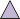
Figure 17.4 An extensive-form game with a counterintuitive Nash equilibrium.
of 0 for player 1; in this case, player 1 has no better alternative than choosing below. The
problem is that player 2’s threat (to play down) is not a credible threat, because if player 2 Credible threat
is actually called upon to make the choice, then she will choose up.
Nash equilibrium
A refinement of Nash equilibrium called subgame perfect Nash equilibrium deals with Subgame perfect
this problem. To define it, we need the idea of a subgame. Every decision state in a game tree Subgame
(including the initial state) defines a subgame—the game in Figure 17.4 therefore containstwo subgames, one rooted at player 1’s decision state, one rooted at player 2’s decision state.
A profile of strategies then forms a subgame perfect Nash equilibrium in a game G if it is a K
Nash equilibrium in every subgame of G. Applying this definition to the game of Figure 17.4,
we find that (above, up) is subgame perfect, but (below, down) is not, because choosing down
is not a Nash equilibrium of the subgame rooted at player 2’s decision state.
Although we needed some new terminology to define subgame perfect Nash equilibrium,
we don’t need any new algorithms. The strategies computed through backward induction
will be subgame perfect Nash equilibria, and it follows that every extensive-form game of
perfect information has a subgame perfect Nash equilibrium, which can be computed in time
polynomial in the size of the game tree.Chance and simultaneous moves
To represent stochastic games, such as backgammon, in extensive form, we add a player
called Chance, whose choices are determined by a probability distribution.To represent simultaneous moves, as in the prisoner’s dilemma or two-finger Morra, we
impose an arbitrary order on the players, but we have the option of asserting that the earlier
player’s actions are not observable to the subsequent players: e.g., Ali must choose refuse or
testify first, then Bo chooses, but Bo does not know what choice Ali made at that time (we
can also represent the fact that the move is revealed later). However, we assume the players
always remember all their own previous actions; this assumption is called perfect recall.Capturing imperfect information
A key feature of extensive form that sets it apart from the game trees that we saw in Chapter 6
is that it can capture partial observability. Game theorists use the term imperfect informa-information
tion to describe situations where players are uncertain about the actual state of the game. Imperfect
610 Chapter 17 Multiagent Decision Making
Information set
Unfortunately, backward induction does not work with games of imperfect information, and
in general, they are considerably more complex to solve than games of perfect information.We saw in Section 6.6 that a player in a partially observable game such as Kriegspiel
can create a game tree over the space of belief states. With that tree, we saw that in some
cases a player can find a sequence of moves (a strategy) that leads to a forced checkmate
regardless of what actual state we started in, and regardless of what strategy the opponent
uses. However, the techniques of Chapter 6 could not tell a player what to do when there is
no guaranteed checkmate. If the player’s best strategy depends on the opponent’s strategy and
vice versa, then minimax (or alpha–beta) by itself cannot find a solution. The extensive form
does allow us to find solutions because it represents the belief states (game theorists call them
information sets) of all players at once. From that representation we can find equilibrium
solutions, just as we did with normal-form games.As a simple example of a sequential game, place two agents in the 4 × 3 world of Fig-
ure 16.1 and have them move simultaneously until one agent reaches an exit square and gets
the payoff for that square. If we specify that no movement occurs when the two agents try
to move into the same square simultaneously (a common problem at many traffic intersec-
tions), then certain pure strategies can get stuck forever. Thus, agents need a mixed strategy
to perform well in this game: randomly choose between moving ahead and staying put. This
is exactly what is done to resolve packet collisions in Ethernet networks.Next we’ll consider a very simple variant of poker. The deck has only four cards, two
aces and two kings. One card is dealt to each player. The first player then has the option to
raise the stakes of the game from 1 point to 2, or to check. If player 1 checks, the game is
over. If player 1 raises, then player 2 has the option to call, accepting that the game is worth
2 points, or fold, conceding the 1 point. If the game does not end with a fold, then the payoff
depends on the cards: it is zero for both players if they have the same card; otherwise the
player with the king pays the stakes to the player with the ace.The extensive-form tree for this game is shown in Figure 17.5. Player 0 is Chance;
players 1 and 2 are depicted by triangles. Each action is depicted as an arrow with a label,1
r
c
2 f
k
I1,1
I2,1
1/6: AA
1
r
k
c
2 f
1/3: AK
0 1/6: KK I2,2
1
1/3: KA
r
k
2
c
f
I1,2
I2,1
1
r
k
2 c
f
+1,-1!
-2,+2!
+1,-1!
0,0!
+1,-1!
+2,-2!
+1,-1!
0,0!
-1,+1!
0,0!
+1,-1!
0,0!
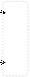
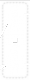
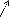

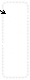
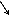


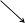
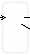
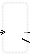


Figure 17.5 Extensive form of a simplified version of poker with two players and only four
cards. The moves are r (raise), f (fold), c (call), and k (check).Section 17.2 Non-Cooperative Game Theory 611
corresponding to a raise, check, call, or fold, or, for Chance, the four possible deals (“AK”
means that player 1 gets an ace and player 2 a king). Terminal states are rectangles labeled
by their payoff to player 1 and player 2. Information sets are shown as labeled dashed boxes;
for example, I1,1 is the information set where it is player 1’s turn, and he knows he has an ace
(but does not know what player 2 has). In information set I2,1, it is player 2’s turn and she
knows that she has an ace and that player 1 has raised, but does not know what card player 1
has. (Due to the limits of two-dimensional paper, this information set is shown as two boxes
rather than one.)One way to solve an extensive game is to convert it to a normal-form game. Recall that
the normal form is a matrix, each row of which is labeled with a pure strategy for player 1, and
each column by a pure strategy for player 2. In an extensive game a pure strategy for player icorresponds to an action for each information set involving that player. So in Figure 17.5, one
pure strategy for player 1 is “raise when in I1,1 (that is, when I have an ace), and check when
in I1,2 (when I have a king).” In the payoff matrix below, this strategy is called rk. Similarly,
strategy cf for player 2 means “call when I have an ace and fold when I have a king.” Since
this is a zero-sum game, the matrix below gives only the payoff for player 1; player 2 always
has the opposite payoff:2:cc
2:cf
2:ff
2:fc
1:rr
0
-1/6
1
7/6
1:kr
-1/3
-1/6
5/6
2/3
1:rk
1/3
0
1/6
1/2
1:kk
0
0
0
0
This game is so simple that it has two pure-strategy equilibria, shown in bold: cf for player
2 and rk or kk for player 1. But in general we can solve extensive games by converting
to normal form and then finding a solution (usually a mixed strategy) using standard linear
programming methods. That works in theory. But if a player has I information sets and
a actions per set, then that player will have aI pure strategies. In other words, the size of
the normal-form matrix is exponential in the number of information sets, so in practice the
approach works only for tiny game trees—a dozen states or so. A game like two-player Texas
hold ’em poker has about 1018 states, making this approach completely infeasible.What are the alternatives? In Chapter 6 we saw how alpha–beta search could handle
games of perfect information with huge game trees by generating the tree incrementally, by
pruning some branches, and by heuristically evaluating nonterminal nodes. But that approach
does not work well for games with imperfect information, for two reasons: first, it is harder
to prune, because we need to consider mixed strategies that combine multiple branches, not a
pure strategy that always chooses the best branch. Second, it is harder to heuristically evaluate
a nonterminal node, because we are dealing with information sets, not individual states.Koller et al. (1996) came to the rescue with an alternative representation of extensive
games, called the sequence form, that is only linear in the size of the tree, rather than ex- Sequence form
ponential. Rather than represent strategies, it represents paths through the tree; the number
of paths is equal to the number of terminal nodes. Standard linear programming methods
can again be applied to this representation. The resulting system can solve poker variants
with 25,000 states in a minute or two. This is an exponential speedup over the normal-form
approach, but still falls far short of handling, say, two-player Texas hold ’em, with 1018 states.612 Chapter 17 Multiagent Decision Making
If we can’t handle 1018 states, perhaps we can simplify the problem by changing the
game to a simpler form. For example, if I hold an ace and am considering the possibility that
the next card will give me a pair of aces, then I don’t care about the suit of the next card;
under the rules of poker any suit will do equally well. This suggests forming an abstractionof the game, one in which suits are ignored. The resulting game tree will be smaller by a
factor of 4! = 24. Suppose I can solve this smaller game; how will the solution to that game
relate to the original game? If no player is considering going for a flush (the only hand where
the suits matter), then the solution for the abstraction will also be a solution for the original
game. However, if any player is contemplating a flush, then the abstraction will be only an
approximate solution (but it is possible to compute bounds on the error).There are many opportunities for abstraction. For example, at the point in a game where
each player has two cards, if I hold a pair of queens, then the other players’ hands could be
abstracted into three classes: better (only a pair of kings or a pair of aces), same (pair of
queens) or worse (everything else). However, this abstraction might be too coarse. A better
abstraction would divide worse into, say, medium pair (nines through jacks), low pair, and
no pair. These examples are abstractions of states; it is also possible to abstract actions. For
example, instead of having a bet action for each integer from 1 to 1000, we could restrict the
bets to 100, 101, 102 and 103. Or we could cut out one of the rounds of betting altogether.
We can also abstract over chance nodes, by considering only a subset of the possible deals.
This is equivalent to the rollout technique used in Go programs. Putting all these abstractions
together, we can reduce the 1018 states of poker to 107 states, a size that can be solved with
current techniques.We saw in Chapter 6 how poker programs such as Libratus and DeepStack were able
to defeat champion human players at heads up (two-player) Texas hold ’em poker. More
recently, the program Pluribus was able to defeat human champions at six-player poker in
two formats: five copies of the program at the table with one human, and one copy of theprogram with five humans. There is a huge leap in complexity here. With one opponent,
there are 2 50 possibilities for the opponent’s hidden cards. But with five opponents there
Cournot competition
=1225
are 50choose10 ≈ 10 billion possibilities. Pluribus develops a baseline strategy entirely from
self-play, then modifies the strategy during actual game play to react to a specific situation.
Pluribus uses a combination of techniques, including Monte Carlo tree search, depth-limited
search, and abstraction.The extensive form is a versatile representation: it can handle partially observable, mul-
tiagent, stochastic, sequential, real-time environments—most of the hard cases from the list
of environment properties on page 61. However, there are two limitations to the extensive
form in particular and game theory in general. First, it does not deal well with continuous
states and actions (although there have been some extensions to the continuous case; for ex-
ample, the theory of Cournot competition uses game theory to solve problems where two
companies choose prices for their products from a continuous space). Second, game theory
assumes the game is known. Parts of the game may be specified as unobservable to some of
the players, but it must be known what parts are unobservable. In cases in which the players
learn the unknown structure of the game over time, the model begins to break down. Let’s
examine each source of uncertainty, and whether each can be represented in game theory.Actions: There is no easy way to represent a game where the players have to discover
what actions are available. Consider the game between computer virus writers and securitySection 17.2 Non-Cooperative Game Theory 613
experts. Part of the problem is anticipating what action the virus writers will try next.
Strategies: Game theory is very good at representing the idea that the other players’
strategies are initially unknown—as long as we assume all agents are rational. The theory
does not say what to do when the other players are less than fully rational. The notion of aequilibrium
Bayes–Nash equilibrium partially addresses this point: it is an equilibrium with respect to Bayes–Nash
a player’s prior probability distribution over the other players’ strategies—in other words, it
expresses a player’s beliefs about the other players’ likely strategies.Chance: If a game depends on the roll of a die, it is easy enough to model a chance node
with uniform distribution over the outcomes. But what if it is possible that the die is unfair?
We can represent that with another chance node, higher up in the tree, with two branches for
“die is fair” and “die is unfair,” such that the corresponding nodes in each branch are in the
same information set (that is, the players don’t know if the die is fair or not). And what if we
suspect the other opponent does know? Then we add another chance node, with one branch
representing the case where the opponent does know, and one where the opponent doesn’t.Utilities: What if we don’t know our opponent’s utilities? Again, that can be modeled
with a chance node, such that the other agent knows its own utilities in each branch, but we
don’t. But what if we don’t know our own utilities? For example, how do I know if it is
rational to order the chef’s salad if I don’t know how much I will like it? We can model that
with yet another chance node specifying an unobservable “intrinsic quality” of the salad.Thus, we see that game theory is good at representing most sources of uncertainty—but
at the cost of doubling the size of the tree every time we add another node; a habit that quickly
leads to intractably large trees. Because of these and other problems, game theory has been
used primarily to analyze environments that are at equilibrium, rather than to control agents
within an environment.Uncertain payoffs and assistance games
In Chapter 1 (page 22), we noted the importance of designing AI systems that can operate
under uncertainty about the true human objective. Chapter 15 (page 543) introduced a simple
model for uncertainty about one’s own preferences, using the example of durian-flavored ice
cream. By the simple device of adding a new latent variable to the model to represent the
unknown preferences, together with an appropriate sensor model (e.g., observing the taste of
a small sample of the ice cream), uncertain preferences can be handled in a natural way.Chapter 15 also studied the off-switch problem: we showed that a robot with uncertainty
about human preferences will defer to the human and allow itself to be switched off. In
that problem, Robbie the robot is uncertain about Harriet the human’s preferences, but we
model Harriet’s decision (whether or not to switch Robbie off) as a simple, deterministic
consequence of her own preferences for the action that Robbie proposes. Here, we generalize
this idea into a full two-person game called an assistance game, in which both Harriet and
Robbie are players. We assume that Harriet observes her own preferences θ and acts in
accordance with them, while Robbie has a prior probability P(θ) over Harriet’s preferences.
The payoff is defined by θ and is identical for both players: both Harriet and Robbie are
maximizing Harriet’s payoff. In this way, the assistance game provides a formal model of the
idea of provably beneficial AI introduced in Chapter 1.In addition to the deferential behavior exhibited by Robbie in the off-switch problem—
which is a restricted kind of assistance game—other behaviors that emerge as equilibrium614 Chapter 17 Multiagent Decision Making
[2,0]
[1,1]
[0,2]
H
[90,0]
[50,50]
[0,90]
R
R
R
$0.90
$1.00
$1.10
Figure 17.6 The paperclip game. Each branch is labeled [p, s] denoting the number of pa-
perclips and staples manufactured on that branch. Harriet the human can choose to make two
paperclips, two staples, or one of each. (The values in green italics are the values for Harriet
if the game ended there, assuming θ = 0.45.) Robbie the robot then has a choice to make 90
paperclips, 90 staples, or 50 of each.Paperclip game
strategies in general assistance games include actions on Harriet’s part that we would describe
as teaching, rewarding, commanding, correcting, demonstrating, or explaining, as well as ac-
tions on Robbie’s part that we would describe as asking permission, learning from demon-
strations, preference elicitation, and so on. The key point is that these behaviors need not be
scripted: by solving the game, Harriet and Robbie work out for themselves how to convey
preference information from Harriet to Robbie, so that Robbie can be more useful to Harriet.
We need not stipulate in advance that Harriet is to “give rewards” or that Robbie is to “follow
instructions,” although these may be reasonable interpretations of how they end up behaving.
To illustrate assistance games, we’ll use the paperclip game. It’s a very simple game in
which Harriet the human has an incentive to “signal” to Robbie the robot some information
about her preferences. Robbie is able to interpret that signal because he can solve the game
and therefore he can understand what would have to be true about Harriet’s preferences inorder for her to signal in that way.
The steps of the game are depicted in Figure 17.6. It involves making paperclips and
staples. Harriet’s preferences are expressed by a payoff function that depends on the number
of paperclips and the number of staples produced, with a certain “exchange rate” between the
two. Harriet’s preference parameter θ denotes the relative value (in dollars) of a paperclip;
for example, she might value paperclips at θ = 0.45 dollars, which means staples are worth
1 − θ = 0.55 dollars. So, if p paperclips and s staples are produced, Harriet’s payoff will be
pθ + s(1 − θ) dollars in all. Robbie’s prior is P(θ) = Uniform(θ; 0, 1). In the game itself,
Harriet goes first, and can choose to make two paperclips, two staples, or one of each. Then
Robbie can choose to make 90 paperclips, 90 staples, or 50 of each.Notice that if she were doing this by herself, Harriet would just make two staples, with a
value of $1.10. (See the annotations at the first level of the tree in Figure 17.6.) But Robbie
is watching, and he learns from her choice. What exactly does he learn? Well, that depends
on how Harriet makes her choice. How does Harriet make her choice? That depends on how
Robbie is going to interpret it. We can resolve this circularity by finding a Nash equilibrium.
In this case, it is unique and can be found by applying myopic best response: pick any strategy
for Harriet; pick the best strategy for Robbie, given Harriet’s strategy; pick the best strategySection 17.2 Non-Cooperative Game Theory 615
for Harriet, given Robbie’s strategy; and so on. The process unfolds as follows:
Start with the greedy strategy for Harriet: make two paperclips if she prefers paperclips;
make one of each if she is indifferent; make two staples if she prefers staples.There are three possibilities Robbie has to consider, given this strategy for Harriet:
If Robbie sees Harriet make two paperclips, he infers that she prefers paperclips,
so he now believes the value of a paperclip is uniformly distributed between 0.5
and 1.0, with an average of 0.75. In that case, his best plan is to make 90 paperclips
with an expected value of $67.50 for Harriet.If Robbie sees Harriet make one of each, he infers that she values paperclips and
staples at 0.50, so the best choice is to make 50 of each.If Robbie sees Harriet make two staples, then by the same argument as in (a), he
should make 90 staples.
Given this strategy for Robbie, Harriet’s best strategy is now somewhat different from
the greedy strategy in step 1. If Robbie is going to respond to her making one of each
by making 50 of each, then she is better off making one of each not just if she is exactly
indifferent, but if she is anywhere close to indifferent. In fact, the optimal policy is now
to make one of each if she values paperclips anywhere between about 0.446 and 0.554.Given this new strategy for Harriet, Robbie’s strategy remains unchanged. For example,
if she chooses one of each, he infers that the value of a paperclip is uniformly distributed
between 0.446 and 0.554, with an average of 0.50, so the best choice is to make 50 of
each. Because Robbie’s strategy is the same as in step 2, Harriet’s best response will be
the same as in step 3, and we have found the equilibrium.
With her strategy, Harriet is, in effect, teaching Robbie about her preferences using a simple
code–—a language, if you like–—that emerges from the equilibrium analysis. Note also that
Robbie never learns Harriet’s preferences exactly, but he learns enough to act optimally on
her behalf–—i.e., he acts just as he would if he did know her preferences exactly. He is
provably beneficial to Harriet under the assumptions stated, and under the assumption that
Harriet is playing the game correctly.Myopic best response works for this example and others like it, but not for more complex
cases. It is possible to prove that provided there are no ties that cause coordination problems,
finding an optimal strategy profile for an assistance game is reducible to solving a POMDP
whose state space is the underlying state space of the game plus the human preference pa-
rameters θ. POMDPs in general are very hard to solve (Section 16.5), but the POMDPs that
represent assistance games have additional structure that enables more efficient algorithms.Assistance games can be generalized to allow for multiple human participants, multiple
robots, imperfectly rational humans, humans who don’t know their own preferences, and
so on. By providing a factored or structured action space, as opposed to the simple atomic
actions in the paperclip game, the opportunities for communication can be greatly enhanced.
Few of these variations have been explored so far, but we expect the key property of assistance
games to remain true: the more intelligent the robot, the better the outcome for the human.616 Chapter 17 Multiagent Decision Making
Characteristic
functionCoalition
Grand coalition
Coalition structure
Payoff vector
Cooperative Game Theory
Recall that cooperative games capture decision making scenarios in which agents can form
binding agreements with one another to cooperate. They can then benefit from receiving extra
value compared to what they would get by acting alone.We start by introducing a model for a class of cooperative games. Formally, these games
are called “cooperative games with transferable utility in characteristic function form.” The
idea of the model is that when a group of agents cooperate, the group as a whole obtains
some utility value, which can then be split among the group members. The model does not
say what actions the agents will take, nor does the game structure itself specify how the value
obtained will be split up (that will come later).Formally, we use the formula G = (N, ν) to say that a cooperative game, G, is defined by
a set of players N = {1,..., n} and a characteristic function, ν, which for every subset of
players C ⊆ N gives the value that the group of players could obtain, should they choose to
work together.Typically, we assume that the empty set of players achieves nothing (ν({}) = 0), and
that the function is nonnegative (ν(C) ≥ 0 for all C). In some games we make the further
assumption that players achieve nothing by working alone: ν({i}) = 0 for all i ∈ N.Coalition structures and outcomes
It is conventional to refer to a subset of players C as a coalition. In everyday use the term
“coalition” implies a collection of people with some common cause (such as the Coalition to
Stop Gun Violence), but we will refer to any subset of players as a coalition. The set of all
players N is known as the grand coalition.In our model, every player must choose to join exactly one coalition (which could be a
coalition of just the single player alone). Thus, the coalitions form a partition of the set of
players. We call the partition a coalition structure. Formally, a coalition structure over a set
of players N is a set of coalitions {C1, . . . ,Ck} such that:Ci /= {}
Ci ⊆ N
Ci ∩Cj = {} for all i /= j ∈ N
C1 ∪··· ∪Ck = N .For example, if we have N = {1, 2, 3}, then there are seven possible coalitions:
{1}, {2}, {3}, {1, 2}, {2, 3}, {3, 1}, and {1, 2, 3}
and five possible coalition structures:
{{1},{2},{3}}, {{1},{2, 3}}, {{2},{1, 3}}, {{3},{1, 2}}, and {{1, 2, 3}}.
We use the notation CS(N) to denote the set of all coalition structures over player set N, and
CS(i) to denote the coalition that player i belongs to.
The outcome of a game is defined by the choices the players make, in deciding which
coalitions to form, and in choosing how to divide up the ν(C) value that each coalition re-
ceives. Formally, given a cooperative game defined by (N, ν), the outcome is a pair (CS, x)
consisting of a coalition structure and a payoff vector x = (x1, . . . , xn) where xi is the valueSection 17.3 Cooperative Game Theory 617
that goes to player i. The payoff must satisfy the constraint that each coalition C splits up all
of its value ν(C) among its members:∑ xi = ν(C) for all C ∈ CS
i∈C
For example, given the game ({1, 2, 3}, ν) where ν({1}) = 4 and ν({2, 3}) = 10, a possible
outcome is:({{1},{2, 3}}, (4, 5, 5)) .
That is, player 1 stays alone and accepts a value of 4, while players 2 and 3 team up to receive
a value of 10, which they choose to split evenly.Some cooperative games have the feature that when two coalitions merge together, they
do no worse than if they had stayed apart. This property is called superadditivity. Formally, Superadditivity
a game is superadditive if its characteristic function satisfies the following condition:
ν(C∪D) ≥ ν(C) + ν(D) for all C, D ⊆ N
If a game is superadditive, then the grand coalition receives a value that is at least as high
as or higher than the total received by any other coalition structure. However, as we will see
shortly, superadditive games do not always end up with a grand coalition, for much the same
reason that the players do not always arrive at a collectively desirable Pareto-optimal outcome
in the prisoner’s dilemma.Strategy in cooperative games
The basic assumption in cooperative game theory is that players will make strategic decisions
about who they will cooperate with. Intuitively, players will not desire to work with unpro-
ductive players—they will naturally seek out players that collectively yield a high coalitional
value. But these sought-after players will be doing their own strategic reasoning. Before we
can describe this reasoning, we need some further definitions.An imputation for a cooperative game (N, ν) is a payoff vector that satisfies the follow- Imputation
ing two conditions:
∑
n
i=1xi = ν(N)
xi ≥ ν({i}) for all i ∈ N .
The first condition says that an imputation must distribute the total value of the grand coali-
tion; the second condition, known as individual rationality, says that each player is at least Individual rationality
as well off as if it had worked alone.
Given an imputation x = (x1, . . . , xn) and a coalition C ⊆ N, we define x(C) to be the sum
∑i∈C xi—the total amount disbursed to C by the imputation x.
Next, we define the core of a game (N, ν) as the set of all imputations x that satisfy the Core
condition x(C) ≥ ν(C) for every possible coalition C ⊂ N. Thus, if an imputation x is not
in the core, then there exists some coalition C ⊂ N such that ν(C) > x(C). The players in C
would refuse to join the grand coalition because they would be better off sticking with C.The core of a game therefore consists of all the possible payoff vectors that no coalition
could object to on the grounds that they could do better by not joining the grand coalition.
Thus, if the core is empty, then the grand coalition cannot form, because no matter how the
grand coalition divided its payoff, some smaller coalition would refuse to join. The main
computational questions around the core relate to whether or not it is empty, and whether a
particular payoff distribution is in the core.618 Chapter 17 Multiagent Decision Making
Shapley value
Marginal
contributionThe definition of the core naturally leads to a system of linear inequalities, as follows (the
unknowns are variables x1, . . . , xn, and the values ν(C) are constants):xi ≥ ν({i}) for all i ∈ N
∑i∈N xi = ν(N)
∑i∈C xi ≥ ν(C) for all C ⊆ N
Any solution to these inequalities will define an imputation in the core. We can formulate the
inequalities as a linear program by using a dummy objective function (for example, maximiz-
ing ∑i∈N xi), which will allow us to compute imputations in time polynomial in the number
of inequalities. The difficulty is that this gives an exponential number of inequalities (one
for each of the 2n possible coalitions). Thus, this approach yields an algorithm for checking
non-emptiness of the core that runs in exponential time. Whether we can do better than this
depends on the game being studied: for many classes of cooperative game, the problem of
checking non-emptiness of the core is co-NP-complete. We give an example below.( ) =
Before proceeding, let’s see an example of a superadditive game with an empty core. The
game has three players N = {1, 2, 3}, and has a characteristic function defined as follows:ν C 1 if |C| ≥ 2
0 otherwise.
Now consider any imputation (x1, x2, x3) for this game. Since ν(N) = 1, it must be the case
that at least one player i has xi > 0, and the other two get a total payoff less than 1. Those
two could benefit by forming a coalition without player i and sharing the value 1 among
themselves. But since this holds for all imputations, the core must be empty.The core formalizes the idea of the grand coalition being stable, in the sense that no
coalition can profitably defect from it. However, the core may contain imputations that are
unreasonable, in the sense that one or more players might feel they were unfair. Suppose
N = {1, 2}, and we have a characteristic function ν defined as follows:ν({1}) = ν({2}) = 5
ν({1, 2}) = 20.
Here, cooperation yields a surplus of 10 over what players could obtain working in isolation,
and so intuitively, cooperation will make sense in this scenario. Now, it is easy to see that the
imputation (6, 14) is in the core of this game: neither player can deviate to obtain a higher
utility. But from the point of view of player 1, this might appear unreasonable, because it
gives 9/10 of the surplus to player 2. Thus, the notion of the core tells us when a grand
coalition can form, but it does not tell us how to distribute the payoff.The Shapley value is an elegant proposal for how to divide the ν(N) value among the
players, given that the grand coalition N formed. Formulated by Nobel laureate Lloyd Shap-
ley in the early 1950s, the Shapley value is intended to be a fair distribution scheme.What does fair mean? It would be unfair to distribute ν(N) based on the eye color of
players, or their gender, or skin color. Students often suggest that the value ν(N) should be
divided equally, which seems like it might be fair, until we consider that this would give the
same reward to players that contribute a lot and players that contribute nothing. Shapley’s
insight was to suggest that the only fair way to divide the value ν(N) was to do so according
to how much each player contributed to creating the value ν(N).First we need to define the notion of a player’s marginal contribution. The marginal
Section 17.3 Cooperative Game Theory 619
contribution that a player i makes to a coalition C is the value that i would add (or remove),
should i join the coalition C. Formally, the marginal contribution that player i makes to C is
denoted by mci(C):mci(C) = ν(C∪{i}) −ν(C).
Now, a first attempt to define a payoff division scheme in line with Shapley’s suggestion
that players should be rewarded according to their contribution would be to pay each player ithe value that they would add to the coalition containing all other players:mci(N −{i}) .
The problem is that this implicitly assumes that player i is the last player to enter the coalition.
So, Shapley suggested, we need to consider all possible ways that the grand coalition could
form, that is, all possible orderings of the players N, and consider the value that i adds to
the preceding players in the ordering. Then, a player should be rewarded by being paid the.We let P denote all possible permutations (e.g., orderings) of the players N, and denote
members of P by p, p′, . . . etc. Where p ∈ P and i ∈ N, we denote by pi the set of players
that precede i in the ordering p. Then the Shapley value for a game G is the imputation
φ(G) = (φ1(G), , φn(G)) defined as follows:n! ∑
1
φi(G) = mci(pi). (17.1)
p∈P
This should convince you that the Shapley value is a reasonable proposal. But the remark-
able fact is that it is the unique solution to a set of axioms that characterizes a “fair” payoff
distribution scheme. We’ll need some more definitions before defining the axioms.We define a dummy player as a player i that never adds any value to a coalition—that is, Dummy player
mci(C) = 0 for all C ⊆ N −{i}. We will say that two players i and j are symmetric players Symmetric players
if they always make identical contributions to coalitions—that is, mci(C) = mcj(C) for allC ⊆ N − {i, j}. Finally, where G = (N, ν) and G′ = (N, ν′) are games with the same set of
players, the game G + G′ is the game with the same player set, and a characteristic function
ν′′ defined by ν′′(C) = ν(C) + ν′(C).
Given these definitions, we can define the fairness axioms satisfied by the Shapley value:
Efficiency: ∑i∈N φi(G) = ν(N). (All the value should be distributed.)
Dummy Player: If i is a dummy player in G then φi(G) = 0. (Players who never
contribute anything should never receive anything.)Symmetry: If i and j are symmetric in G then φi(G) = φj(G). (Players who make
identical contributions should receive identical payoffs.)Additivity: The value is additive over games: For all games G = (N, ν) and G′ = (N, ν′),
and for all players i ∈ N, we have φi(G + G′) = φi(G) + φi(G′).
The additivity axiom is admittedly rather technical. If we accept it as a requirement, however,
we can establish the following key property: the Shapley value is the only way to distribute K
coalitional value so as to satisfy these fairness axioms.
620 Chapter 17 Multiagent Decision Making
Computation in cooperative games
From a theoretical point of view, we now have a satisfactory solution. But from a computa-
tional point of view, we need to know how to compactly represent cooperative games, and
how to efficiently compute solution concepts such as the core and the Shapley value.The obvious representation for a characteristic function would be a table listing the value
ν(C) for all 2n coalitions. This is infeasible for large n. A number of approaches to com-
pactly representing cooperative games have been developed, which can be distinguished by
whether or not they are complete. A complete representation scheme is one that is capable of
representing any cooperative game. The drawback with complete representation schemes is
that there will always be some games that cannot be represented compactly. An alternative is
to use a representation scheme that is guaranteed to be compact, but which is not complete.Marginal
contribution netMarginal contribution nets
We now describe one representation scheme, called marginal contribution nets (MC-nets).
We will use a slightly simplified version to facilitate presentation, and the simplification
makes it incomplete—the full version of MC-nets is a complete representation.The idea behind marginal contribution nets is to represent the characteristic function of a
game (N, v) as a set of coalition-value rules, of the form: (Ci, xi), where Ci ⊆ N is a coalition
and xi is a number. To compute the value of a coalition C, we simply sum the values of
all rules (Ci, xi) such that Ci ⊆ C. Thus, given a set of rules R = {(C1, x1), . . . , (Ck, xk)}, the
corresponding characteristic function is:ν(C) = ∑{xi | (Ci, xi) ∈ R and Ci ⊆ C}.
Suppose we have a rule set R containing the following three rules:
{({1, 2}, 5), ({2}, 2), ({3}, 4)}.
Then, for example, we have:
ν({1}) = 0 (because no rules apply),
ν({3}) = 4 (third rule),
ν({1, 3}) = 4 (third rule),
ν({2, 3}) = 6 (second and third rules), and
ν({1, 2, 3}) = 11 (first, second, and third rules).
(
With this representation we can compute the Shapley value in polynomial time. The key
insight is that each rule can be understood as defining a game on its own, in which the players
are symmetric. By appealing to Shapley’s axioms of additivity and symmetry, therefore, the
Shapley value φi(R) of player i in the game associated with the rule set R is then simply:φi(R) = ∑
x
|C|
if i ∈ C
(C,x)∈R
0 otherwise.
The version of marginal contribution nets that we have presented here is not a complete repre-
sentation scheme: there are games whose characteristic function cannot be represented using
rule sets of the form described above. A richer type of marginal contribution networks al-
lows for rules of the form (φ, x), where φ is a propositional logic formula over the players
N: a coalition C satisfies the condition φ if it corresponds to a satisfying assignment for φ.Section 17.3 Cooperative Game Theory 621
{1}, {2}, {3}, {4}
{1}, {2}, {3, 4} {1, 2}, {3}, {4} {1}, {3}, {2, 4} {2}, {4}, {1, 3} {1}, {4}, {2, 3} {2}, {3}, {1, 4}
{1}, {2, 3, 4} {1, 2}, {3, 4} {2}, {1, 3, 4} {1, 3}, {2, 4} {3},{1, 2, 4} {1, 4},{ 2, 3} {4},{1, 2, 3}
{1, 2, 3, 4}
level 4
level 3
level 2
level 1
Figure 17.7 The coalition structure graph for N = {1, 2, 3, 4}. Level 1 has coalition struc-
tures containing a single coalition; level 2 has coalition structures containing two coalitions,
and so on.This scheme is a complete representation—in the worst case, we need a rule for every pos-
sible coalition. Moreover, the Shapley value can be computed in polynomial time with this
scheme; the details are more involved than for the simple rules described above, although the
basic principle is the same; see the notes at the end of the chapter for references.Coalition structures for maximum social welfare
We obtain a different perspective on cooperative games if we assume that the agents share
a common purpose. For example, if we think of the agents as being workers in a company,
then the strategic considerations relating to coalition formation that are addressed by the core,
for example, are not relevant. Instead, we might want to organize the workforce (the agents)
into teams so as to maximize their overall productivity. More generally, the task is to find a
coalition that maximizes the social welfare of the system, defined as the sum of the values of
the individual coalitions. We write the social welfare of a coalition structure CS as sw(CS),
with the following definition:sw(CS) = ∑
C∈CS
ν(C) .
Then a socially optimal coalition structure CS∗ with respect to G maximizes this quantity.
Finding a socially optimal coalition structure is a very natural computational problem, which
has been studied beyond the multiagent systems community: it is sometimes called the setproblem
partitioning problem. Unfortunately, the problem is NP-hard, because the number of possi- Set partitioning
ble coalition structures grows exponentially in the number of players.
Finding the optimal coalition structure by naive exhaustive search is therefore infeasible
in general. An influential approach to optimal coalition structure formation is based on thegraph
idea of searching a subspace of the coalition structure graph. The idea is best explained Coalition structure
with reference to an example.
Suppose we have a game with four agents, N = {1, 2, 3, 4}. There are fifteen possible
coalition structures for this set of agents. We can organize these into a coalition structure
graph as shown in Figure 17.7, where the nodes at level l of the graph correspond to all
the coalition structures with exactly l coalitions. An upward edge in the graph represents
the division of a coalition in the lower node into two separate coalitions in the upper node.622 Chapter 17 Multiagent Decision Making
For example, there is an edge from {{1},{2, 3, 4}} to {{1},{2},{3, 4}} because this latter
coalition structure is obtained from the former by dividing the coalition {2, 3, 4} into the
coalitions {2} and {3, 4}.The optimal coalition structure CS∗ lies somewhere within the coalition structure graph,
and so to find this, it seems we would have to evaluate every node in the graph. But consider
the bottom two rows of the graph—levels 1 and 2. Every possible coalition (excluding the
empty coalition) appears in these two levels. (Of course, not every possible coalition structure
appears in these two levels.) Now, suppose we restrict our search for a possible coalition
structure to just these two levels—we go no higher in the graph. Let CS′ be the best coalition
structure that we find in these two levels, and let CS∗ be the best coalition structure overall.
Let C∗ be a coalition with the highest value of all possible coalitions:C∗ ∈ argmax ν(C).
C⊆N
The value of the best coalition structure we find in the first two levels of the coalition structure
graph must be at least as much as the value of the best possible coalition: sw(CS′) ≥ ν(C∗).
This is because every possible coalition appears in at least one coalition structure in the first
two levels of the graph. So assume the worst case, that is, sw(CS′) = ν(C∗).n
n
Compare the value of sw(CS′) to sw(CS∗). Since sw(CS′) is the highest possible value
of any coalition structure, and there are n agents (n = 4 in the case of Figure 17.7), then the
highest possible value of sw(CS∗) would be nν(C∗) = n · sw(CS′). In other words, in the
worst possible case, the value of the best coalition structure we find in the first two levels of
the graph would be 1 the value of the best, where n is the number of agents. Thus, although
searching the first two levels of the graph does not guarantee to give us the optimal coalition
structure, it does guarantee to give us one that is no worse that 1 of the optimal. In practice itwill often be much better than that.
Center
Contract net
protocol
Making Collective Decisions
We will now turn from agent design to mechanism design—the problem of designing the
right game for a collection of agents to play. Formally, a mechanism consists ofA language for describing the set of allowable strategies that agents may adopt.
A distinguished agent, called the center, that collects reports of strategy choices from
the agents in the game. (For example, the auctioneer is the center in an auction.)An outcome rule, known to all agents, that the center uses to determine the payoffs to
each agent, given their strategy choices.
This section discusses some of the most important mechanisms.
Allocating tasks with the contract net
The contract net protocol is probably the oldest and most important multiagent problem-
solving technique studied in AI. It is a high-level protocol for task sharing. As the name
suggests, the contract net was inspired from the way that companies make use of contracts.The overall contract net protocol has four main phases—see Figure 17.8. The process
starts with an agent identifying the need for cooperative action with respect to some task.
The need might arise because the agent does not have the capability to carry out the taskI have a
problem...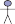

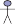

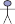
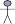

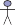


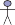
Section 17.4 Making Collective Decisions 623
problem recognition
task
announcement
awarding
bidding


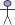

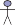

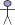

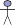

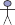
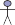
Figure 17.8 The contract net task allocation protocol.
in isolation, or because a cooperative solution might in some way be better (faster, more
efficient, more accurate).The agent advertises the task to other agents in the net with a task announcement mes- Task announcement
sage, and then acts as the manager of that task for its duration. The task announcement Manager
message must include sufficient information for recipients to judge whether or not they are
willing and able to bid for the task. The precise information included in a task announcement
will depend on the application area. It might be some code that needs to be executed; or it
might be a logical specification of a goal to be achieved. The task announcement might also
include other information that might be required by recipients, such as deadlines, quality-of-
service requirements, and so on.When an agent receives a task announcement, it must evaluate it with respect to its own
capabilities and preferences. In particular, each agent must determine, whether it has the
capability to carry out the task, and second, whether or not it desires to do so. On this basis, it
may then submit a bid for the task. A bid will typically indicate the capabilities of the bidder Bid
that are relevant to the advertised task, and any terms and conditions under which the taskwill be carried out.
In general, a manager may receive multiple bids in response to a single task announce-
ment. Based on the information in the bids, the manager selects the most appropriate agent
(or agents) to execute the task. Successful agents are notified through an award message, and
become contractors for the task, taking responsibility for the task until it is completed.The main computational tasks required to implement the contract net protocol can be
summarized as follows:624 Chapter 17 Multiagent Decision Making
Auction
BidderAscending-bid
auctionTask announcement processing. On receipt of a task announcement, an agent decides if
it wishes to bid for the advertised task.Bid processing. On receiving multiple bids, the manager must decide which agent to
award the task to, and then award the task.Award processing. Successful bidders (contractors) must attempt to carry out the task,
which may mean generating new subtasks, which are advertised via further task an-
nouncements.
Despite (or perhaps because of) its simplicity, the contract net is probably the most widely
implemented and best-studied framework for cooperative problem solving. It is naturally
applicable in many settings—a variation of it is enacted every time you request a car with
Uber, for example.Allocating scarce resources with auctions
One of the most important problems in multiagent systems is that of allocating scarce re-
sources; but we may as well simply say “allocating resources,” since in practice most useful
resources are scarce in some sense. The auction is the most important mechanism for allo-
cating resources. The simplest setting for an auction is where there is a single resource and
there are multiple possible bidders. Each bidder i has a utility value vi for the item.In some cases, each bidder has a private value for the item. For example, a tacky sweater
might be attractive to one bidder and valueless to another.In other cases, such as auctioning drilling rights for an oil tract, the item has a com-—the tract will produce some amount of money, X , and all bidders value a dollar
equally—but there is uncertainty as to what the actual value of X is. Different bidders have
different information, and hence different estimates of the item’s true value. In either case,
bidders end up with their own vi. Given vi, each bidder gets a chance, at the appropriate time
or times in the auction, to make a bid bi. The highest bid, bmax, wins the item, but the price
paid need not be bmax; that’s part of the mechanism design.The best-known auction mechanism is the ascending-bid auction,3 or English auction,
English auction in which the center starts by asking for a minimum (or reserve) bid bmin. If some bidder
is willing to pay that amount, the center then asks for bmin + d, for some increment d, and
continues up from there. The auction ends when nobody is willing to bid anymore; then the
last bidder wins the item, paying the price bid.How do we know if this is a good mechanism? One goal is to maximize expected revenue
for the seller. Another goal is to maximize a notion of global utility. These goals overlap to
some extent, because one aspect of maximizing global utility is to ensure that the winner of
the auction is the agent who values the item the most (and thus is willing to pay the most). WeEfficient
Collusion
say an auction is efficient if the goods go to the agent who values them most. The ascending-
bid auction is usually both efficient and revenue maximizing, but if the reserve price is set too
high, the bidder who values it most may not bid, and if the reserve is set too low, the seller
may get less revenue.Probably the most important things that an auction mechanism can do is encourage a suf-
ficient number of bidders to enter the game and discourage them from engaging in collusion.
Collusion is an unfair or illegal agreement by two or more bidders to manipulate prices. It can3 The word “auction” comes from the Latin augeo, to increase.
Section 17.4 Making Collective Decisions 625
happen in secret backroom deals or tacitly, within the rules of the mechanism. For example,
in 1999, Germany auctioned ten blocks of cellphone spectrum with a simultaneous auction
(bids were taken on all ten blocks at the same time), using the rule that any bid must be a min-
imum of a 10% raise over the previous bid on a block. There were only two credible bidders,
and the first, Mannesman, entered the bid of 20 million deutschmark on blocks 1-5 and 18.18
million on blocks 6-10. Why 18.18M? One of T-Mobile’s managers said they “interpreted
Mannesman’s first bid as an offer.” Both parties could compute that a 10% raise on 18.18M
is 19.99M; thus Mannesman’s bid was interpreted as saying “we can each get half the blocks
for 20M; let’s not spoil it by bidding the prices up higher.” And in fact T-Mobile bid 20M on
blocks 6-10 and that was the end of the bidding.The German government got less than they expected, because the two competitors were
able to use the bidding mechanism to come to a tacit agreement on how not to compete.
From the government’s point of view, a better result could have been obtained by any of these
changes to the mechanism: a higher reserve price; a sealed-bid first-price auction, so that
the competitors could not communicate through their bids; or incentives to bring in a third
bidder. Perhaps the 10% rule was an error in mechanism design, because it facilitated the
precise signaling from Mannesman to T-Mobile.In general, both the seller and the global utility function benefit if there are more bidders,
although global utility can suffer if you count the cost of wasted time of bidders that have no
chance of winning. One way to encourage more bidders is to make the mechanism easier for
them. After all, if it requires too much research or computation on the part of the bidders,
they may decide to take their money elsewhere.So it is desirable that the bidders have a dominant strategy. Recall that “dominant”
means that the strategy works against all other strategies, which in turn means that an agent
can adopt it without regard for the other strategies. An agent with a dominant strategy can just
bid, without wasting time contemplating other agents’ possible strategies. A mechanism bywhich agents have a dominant strategy is called a strategy-proof mechanism. If, as is usually Strategy-proof
the case, that strategy involves the bidders revealing their true value, vi, then it is called
a truth-revealing, or truthful, auction; the term incentive compatible is also used. The Truth-revealing
revelation principle states that any mechanism can be transformed into an equivalent truth- Revelation principle
revealing mechanism, so part of mechanism design is finding these equivalent mechanisms.It turns out that the ascending-bid auction has most of the desirable properties. The bidder
with the highest value vi gets the goods at a price of bo + d, where bo is the highest bid among
all the other agents and d is the auctioneer’s increment.4 Bidders have a simple dominant
strategy: keep bidding as long as the current cost is below your vi. The mechanism is not
quite truth-revealing, because the winning bidder reveals only that his vi ≥ bo + d; we have a
lower bound on vi but not an exact amount.A disadvantage (from the point of view of the seller) of the ascending-bid auction is that
it can discourage competition. Suppose that in a bid for cellphone spectrum there is one
advantaged company that everyone agrees would be able to leverage existing customers and
infrastructure, and thus can make a larger profit than anyone else. Potential competitors can
see that they have no chance in an ascending-bid auction, because the advantaged company4 There is actually a small chance that the agent with highest vi fails to get the goods, in the case in which
bo < vi < bo + d. The chance of this can be made arbitrarily small by decreasing the increment d.
626 Chapter 17 Multiagent Decision Making
Sealed-bid auction
Sealed-bid
second-price auction
can always bid higher. Thus, the competitors may not enter at all, and the advantaged com-
pany ends up winning at the reserve price.Another negative property of the English auction is its high communication costs. Either
the auction takes place in one room or all bidders have to have high-speed, secure communi-
cation lines; in either case they have to have time to go through several rounds of bidding.An alternative mechanism, which requires much less communication, is the sealed-bid. Each bidder makes a single bid and communicates it to the auctioneer, without the
other bidders seeing it. With this mechanism, there is no longer a simple dominant strategy.
If your value is vi and you believe that the maximum of all the other agents’ bids will be bo,
then you should bid bo + ϵ, for some small ϵ, if that is less than vi. Thus, your bid depends on
your estimation of the other agents’ bids, requiring you to do more work. Also, note that the
agent with the highest vi might not win the auction. This is offset by the fact that the auction
is more competitive, reducing the bias toward an advantaged bidder.A small change in the mechanism for sealed-bid auctions leads to the sealed-bid second-, also known as a Vickrey auction.5 In such auctions, the winner pays the
i =
Vickrey auction price of the second-highest bid, bo, rather than paying his own bid. This simple modification
completely eliminates the complex deliberations required for standard (or first-price) sealed-
bid auctions, because the dominant strategy is now simply to bid vi; the mechanism is truth-
revealing. Note that the utility of agent i in terms of his bid bi, his value vi, and the best bid
among the other agents, bo, isU (vi −bo) if bi > bo
0 otherwise.
To see that bi = vi is a dominant strategy, note that when (vi −bo) is positive, any bid that wins
the auction is optimal, and bidding vi in particular wins the auction. On the other hand, when
(vi −bo) is negative, any bid that loses the auction is optimal, and bidding vi in particular loses
the auction. So bidding vi is optimal for all possible values of bo, and in fact, vi is the only bid
that has this property. Because of its simplicity and the minimal computation requirements
for both seller and bidders, the Vickrey auction is widely used in distributed AI systems.Internet search engines conduct several trillion auctions each year to sell advertisements
along with their search results, and online auction sites handle $100 billion a year in goods,
all using variants of the Vickrey auction. Note that the expected value to the seller is bo,
which is the same expected return as the limit of the English auction as the increment d goesRevenue equivalence
theoremto zero. This is actually a very general result: the revenue equivalence theorem states that,
with a few minor caveats, any auction mechanism in which bidders have values vi known only
to themselves (but know the probability distribution from which those values are sampled),
will yield the same expected revenue. This principle means that the various mechanisms are
not competing on the basis of revenue generation, but rather on other qualities.Although the second-price auction is truth-revealing, it turns out that auctioning n goods
with an n + 1 price auction is not truth-revealing. Many Internet search engines use a mech-
anism where they auction n slots for ads on a page. The highest bidder wins the top spot,
the second highest gets the second spot, and so on. Each winner pays the price bid by the
next-lower bidder, with the understanding that payment is made only if the searcher actually5 Named after William Vickrey (1914–1996), who won the 1996 Nobel Prize in economics for this work and
died of a heart attack three days later.Section 17.4 Making Collective Decisions 627
clicks on the ad. The top slots are considered more valuable because they are more likely to
be noticed and clicked on.Imagine that three bidders, b1, b2 and b3, have valuations for a click of v1 = 200, v2 = 180,
and v3 = 100, and that n = 2 slots are available; and it is known that the top spot is clicked on
5% of the time and the bottom spot 2%. If all bidders bid truthfully, then b1 wins the top slot
and pays 180, and has an expected return of (200 − 180) × 0.05 = 1. The second slot goes to
b2. But b1 can see that if she were to bid anything in the range 101–179, she would concede
the top slot to b2, win the second slot, and yield an expected return of (200 − 100) ×.02 = 2.
Thus, b1 can double her expected return by bidding less than her true value in this case.In general, bidders in this n + 1 price auction must spend a lot of energy analyzing the
bids of others to determine their best strategy; there is no simple dominant strategy.Aggarwal et al. (2006) show that there is a unique truthful auction mechanism for this
multislot problem, in which the winner of slot j pays the price for slot j just for those addi-
tional clicks that are available at slot j and not at slot j + 1. The winner pays the price for the
lower slot for the remaining clicks. In our example, b1 would bid 200 truthfully, and would
pay 180 for the additional .05 − .02 = .03 clicks in the top slot, but would pay only the cost
of the bottom slot, 100, for the remaining .02 clicks. Thus, the total return to b1 would be
(200 − 180) ×.03 + (200 − 100) ×.02 = 2.6.Another example of where auctions can come into play within AI is when a collection of
agents are deciding whether to cooperate on a joint plan. Hunsberger and Grosz (2000) show
that this can be accomplished efficiently with an auction in which the agents bid for roles in
the joint plan.Common goods
Now let’s consider another type of game, in which countries set their policy for controlling
air pollution. Each country has a choice: they can reduce pollution at a cost of -10 points for
implementing the necessary changes, or they can continue to pollute, which gives them a net
utility of -5 (in added health costs, etc.) and also contributes -1 points to every other country
(because the air is shared across countries). Clearly, the dominant strategy for each country
is “continue to pollute,” but if there are 100 countries and each follows this policy, then each
country gets a total utility of -104, whereas if every country reduced pollution, they wouldcommons
each have a utility of -10. This situation is called the tragedy of the commons: if nobody has Tragedy of the
to pay for using a common resource, then it may be exploited in a way that leads to a lower
total utility for all agents. It is similar to the prisoner’s dilemma: there is another solution
to the game that is better for all parties, but there appears to be no way for rational agents to
arrive at that solution under the current game.One approach for dealing with the tragedy of the commons is to change the mechanism to
one that charges each agent for using the commons. More generally, we need to ensure thatall externalities—effects on global utility that are not recognized in the individual agents’ Externalities
transactions—are made explicit.
Setting the prices correctly is the difficult part. In the limit, this approach amounts to
creating a mechanism in which each agent is effectively required to maximize global utility,
but can do so by making a local decision. For this example, a carbon tax would be an example
of a mechanism that charges for use of the commons in a way that, if implemented well,
maximizes global utility.628 Chapter 17 Multiagent Decision Making
VCG
Social choice theory
It turns out there is a mechanism design, known as the Vickrey–Clarke–Groves or VCG
mechanism, which has two favorable properties. First, it is utility maximizing—that is, it
maximizes the global utility, which is the sum of the utilities for all parties, ∑i vi. Second,
the mechanism is truth-revealing—the dominant strategy for all agents is to reveal their true
value. There is no need for them to engage in complicated strategic bidding calculations.We will give an example using the problem of allocating some common goods. Suppose a
city decides it wants to install some free wireless Internet transceivers. However, the number
of transceivers available is less than the number of neighborhoods that want them. The city
wants to maximize global utility, but if it says to each neighborhood council “How much do
you value a free transceiver (and by the way we will give them to the parties that value them
the most)?” then each neighborhood will have an incentive to report a very high value. The
VCG mechanism discourages this ploy and gives them an incentive to report their true value.
It works as follows:The center asks each agent to report its value for an item, vi.
The center allocates the goods to a set of winners, W , to maximize ∑i∈W vi.
The center calculates for each winning agent how much of a loss their individual pres-
ence in the game has caused to the losers (who each got 0 utility, but could have got v j
if they were a winner).Each winning agent then pays to the center a tax equal to this loss.
For example, suppose there are 3 transceivers available and 5 bidders, who bid 100, 50,
40, 20, and 10. Thus the set of 3 winners, W , are the ones who bid 100, 50, and 40 and the
global utility from allocating these goods is 190. For each winner, it is the case that had they
not been in the game, the bid of 20 would have been a winner. Thus, each winner pays a tax
of 20 to the center.All winners should be happy because they pay a tax that is less than their value, and
all losers are as happy as they can be, because they value the goods less than the required
tax. That’s why the mechanism is truth-revealing. In this example, the crucial value is 20; it
would be irrational to bid above 20 if your true value was actually below 20, and vice versa.
Since the crucial value could be anything (depending on the other bidders), that means that is
always irrational to bid anything other than your true value.The VCG mechanism is very general, and can be applied to all sorts of games, not just
auctions, with a slight generalization of the mechanism described above. For example, in a
combinatorial auction there are multiple different items available and each bidder can place
multiple bids, each on a subset of the items. For example, in bidding on plots of land, one
bidder might want either plot X or plot Y but not both; another might want any three adjacent
plots, and so on. The VCG mechanism can be used to find the optimal outcome, although
with 2N subsets of N goods to contend with, the computation of the optimal outcome is NP-
complete. With a few caveats the VCG mechanism is unique: every other optimal mechanism
is essentially equivalent.Voting
The next class of mechanisms that we look at are voting procedures, of the type that are used
for political decision making in democratic societies. The study of voting procedures derives
from the domain of social choice theory.Section 17.4 Making Collective Decisions 629
The basic setting is as follows. As usual, we have a set N = {1, , n} of agents, who
in this section will be the voters. These voters want to make decisions with respect to a set
Ω = {ω1, ω2, } of possible outcomes. In a political election, each element of Ω could stand
for a different candidate winning the election.Each voter will have preferences over Ω. These are usually expressed not as quantitative
utilities but rather as qualitative comparisons: we write ω >i ω′ to mean that outcome ω is
ranked above outcome ω′ by agent i. In an election with three candidates, agent i might have
ω2 >i ω3 >i ω1.The fundamental problem of social choice theory is to combine these preferences, using
function
a social welfare function, to come up with a social preference order: a ranking of the Social welfare
candidates, from most preferred down to least preferred. In some cases, we are only interested
in a social outcome—the most preferred outcome by the group as a whole. We will write Social outcome
ω >∗ ω′ to mean that ω is ranked above ω′ in the social preference order.
A simpler setting is where we are not concerned with obtaining an entire ordering of
function
candidates, but simply want to choose a set of winners. A social choice function takes as Social choice
input a preference order for each voter, and produces as output a set of winners.
Democratic societies want a social outcome that reflects the preferences of the voters.
Unfortunately, this is not always straightforward. Consider Condorcet’s Paradox, a famous Condorcet’s Paradox
example posed by the Marquis de Condorcet (1743–1794). Suppose we have three outcomes,
Ω = {ωa, ωb, ωc}, and three voters, N = {1, 2, 3}, with preferences as follows.
ωa >1 ωb >1 ωc
ωc >2 ωa >2 ωb
ωb >3 ωc >3 ωa
(17.2)
Now, suppose we have to choose one of the three candidates on the basis of these preferences.
The paradox is that:2/3 of the voters prefer ω3 over ω1.
2/3 of the voters prefer ω1 over ω2.
2/3 of the voters prefer ω2 over ω3.
So, for each possible winner, we can point to another candidate who would be preferred by
at least 2/3 of the electorate. It is obvious that in a democracy we cannot hope to make everyvoter happy. This demonstrates that there are scenarios in which no matter which outcome we K
choose, a majority of voters will prefer a different outcome. A natural question is whether
there is any “good” social choice procedure that really reflects the preferences of voters. To
answer this, we need to be precise about what we mean when we say that a rule is “good.”
We will list some properties we would like a good social welfare function to satisfy:The Pareto Condition: The Pareto condition simply says that if every voter ranks ωi
above ωj, then ωi >∗ ωj.
The Condorcet Winner Condition: An outcome is said to be a Condorcet winner if
a majority of candidates prefer it over all other outcomes. To put it another way, a
Condorcet winner is a candidate that would beat every other candidate in a pairwise
election. The Condorcet winner condition says that if ωi is a Condorcet winner, then ωi
should be ranked first.Independence of Irrelevant Alternatives (IIA): Suppose there are a number of candi-
dates, including ωi and ωj, and voter preferences are such that ωi >∗ ωj. Now, suppose
630 Chapter 17 Multiagent Decision Making
Arrow’s theorem
Simple majority vote
Plurality voting
Borda count
Approval voting
Instant runoff voting
True majority rule
votingone voter changed their preferences in some way, but not about the relative ranking of
ωi and ωj. The IIA condition says that, ωi >∗ ωj should not change.
No Dictatorships: It should not be the case that the social welfare function simply
outputs one voter’s preferences and ignores all other voters.These four conditions seem reasonable, but a fundamental theorem of social choice theory
called Arrow’s theorem (due to Kenneth Arrow) tells us that it is impossible to satisfy all
four conditions (for cases where there are at least three outcomes). That means that for
any social choice mechanism we might care to pick, there will be some situations (perhaps
unusual or pathological) that lead to controversial outcomes. However, it does not mean that
democratic decision making is hopeless in most cases. We have not yet seen any actual voting
procedures, so let’s now look at some.With just two candidates, simple majority vote (the standard method in the US and
UK) is the favored mechanism. We ask each voter which of the two candidates they
prefer, and the one with the most votes is the winner.With more than two outcomes, plurality voting is a common system. We ask each
voter for their top choice, and select the candidate(s) (more than one in the case of ties)
who get the most votes, even if nobody gets a majority. While it is common, plurality
voting has been criticized for delivering unpopular outcomes. A key problem is that it
only takes into account the top-ranked candidate in each voter’s preferences.The Borda count (after Jean-Charles de Borda, a contemporary and rival of Condorcet)
is a voting procedure that takes into account all the information in a voter’s preference
ordering. Suppose we have k candidates. Then for each voter i, we take their preference
ordering >i, and give a score of k to the top ranked candidate, a score of k − 1 to the
second-ranked candidate, and so on down to the least-favored candidate in i’s ordering.
The total score for each candidate is their Borda count, and to obtain the social outcome>∗, outcomes are ordered by their Borda count—highest to lowest. One practical prob-
lem with this system is that it asks voters to express preferences on all the candidates,
and some voters may only care about a subset of candidates.In approval voting, voters submit a subset of the candidates that they approve of. The
winner(s) are those who are approved by the most voters. This system is often used
when the task is to choose multiple winners.In instant runoff voting, voters rank all the candidates, and if a candidate has a major-
ity of first-place votes, they are declared the winner. If not, the candidate with the fewest
first-place votes is eliminated. That candidate is removed from all the preference rank-
ings (so those voters who had the eliminated candidate as their first choice now have
another candidate as their new first choice) and the process is repeated. Eventually,
some candidate will have a majority of first-place votes (unless there is a tie).In true majority rule voting, the winner is the candidate who beats every other can-
didate in pairwise comparisons. Voters are asked for a full preference ranking of all
candidates. We say that ω beats ω′, if more voters have ω > ω′ than have ω′ > ω. This
system has the nice property that the majority always agrees on the winner, but it has
the bad property that not every election will be decided: in the Condorcet paradox, for
example, no candidate wins a majority.Section 17.4 Making Collective Decisions 631
Strategic manipulation
Besides Arrow’s Theorem, another important negative results in the area of social choice
Satterthwaite
theory is the Gibbard–Satterthwaite Theorem. This result relates to the circumstances Gibbard–
under which a voter can benefit from misrepresenting their preferences.
Recall that a social choice function takes as input a preference order for each voter, and
gives as output a set of winning candidates. Each voter has, of course, their own true prefer-
ences, but there is nothing in the definition of a social choice function that requires voters to
report their preferences truthfully; they can declare whatever preferences they like.In some cases, it can make sense for a voter to misrepresent their preferences. For exam-
ple, in plurality voting, voters who think their preferred candidate has no chance of winning
may vote for their second choice instead. That means plurality voting is a game in which
voters have to think strategically (about the other voters) to maximize their expected utility.This raises an interesting question: can we design a voting mechanism that is immune to
such manipulation—a mechanism that is truth-revealing? The Gibbard–Satterthwaite Theo-
Theorem
rem tells us that we can not: Any social choice function that satisfies the Pareto condition for K
a domain with more than two outcomes is either manipulable or a dictatorship. That is, for
any “reasonable” social choice procedure, there will be some circumstances under which a
voter can in principle benefit by misrepresenting their preferences. However, it does not tell
us how such manipulation might be done; and it does not tell us that such manipulation is
likely in practice.
Bargaining